1. Резюме
За квартал совокупный оборот категории «Мебель» на Ozon составил 116.17 млрд ₽ по 17 товарным категориям. Шесть крупнейших почти равны по объёму: Матрасы (11,9 млрд), Столы (11,4), Диваны и кресла (11,2), Шкафы (10,9), Стулья (10,4), Кровати (10,1) — вместе более половины рынка.
Главный вывод по структуре: рынок мебели на Ozon сильно фрагментирован. В большинстве крупных ниш топ-5 продавцов держат менее 30% оборота, а лидер №1 — лишь 4–13%. Это рынок открытых возможностей: доминирующих монополистов почти нет.
Где концентрация всё же высокая: категории Шкафы (топ-5 = 39%), Мебель для кухни (36%), Комплекты мебели (33%). Именно здесь лидеры реально контролируют рынок — НОНТОН.РФ (Кухонный гарнитур — 33% ниши) и ООО «УЮТНАЯ ЛОГИКА» (Шкаф распашной — 28% при обороте ниши 7 млрд ₽).
Немного игроков держат много ниш. НОНТОН.РФ лидирует в 11 нишах, Правила мебели — в 8 (в основном вторые места), ГУД ЛАКК — в 6, Ami / Millwood / ООО «Стул Груп» — по 5. Остальные — узкие нишевые специалисты.
Ценовая стратегия лидеров: почти все №1 продают дороже среднего чека своей категории (премиум-позиционирование) — единственное исключение среди лидеров категорий это АБВ (мебель для бизнеса).
Несезонный рост: если убрать сезонную садовую мебель, самые быстрорастущие ниши — Чехол для бескаркасной мебели (+265%), Подвесное кресло (+196%), Набор мебельной фурнитуры (+123%). А на объёме растут Обувница и Кухонный гарнитур (по +45% при обороте 1,7 и 2,1 млрд ₽).
2. Методология и оговорки
Источник данных — рейтинги продавцов Ozon по товарным категориям за квартал: оборот («заказано на сумму»), динамика к предыдущему периоду, число заказанных товаров, средний чек, число продавцов и брендов, доля выкупа и доля продавца в категории/нише.
Что собрано: по каждой из 219 подкатегорий — топ-1 и топ-2 продавца с их метриками; доли топ-5 — из сводных данных Ozon. Доли №1 и №2 (для 151 ниши, где собраны лидеры) взяты из показателя «доля в категории» каждого продавца.
Дерево категорий. Структура трёхуровневая: корень «Мебель» → 17 категорий (L1) → подкатегории (L2). Лидер категории часто совпадает с лидером её главной подкатегории (напр. Матрасы ≈ Матрас) — в расчётах это один факт, без двойного учёта.
3. Обзор рынка: где деньги
Таблица ниже — все 17 категорий, отсортированы по обороту. Колонка «Топ-5» показывает концентрацию: чем выше, тем сильнее рынок держат несколько игроков.
| Категория | Оборот | Динамика | Товаров | Ср. чек | Продавцов | Топ-5 |
|---|---|---|---|---|---|---|
| Матрасы | 11.90 млрд | 36.0% | 978 434 | 12 158 ₽ | 4 897 | 27.5% |
| Столы | 11.42 млрд | 9.0% | 977 988 | 11 682 ₽ | 12 465 | 6.8% |
| Диваны и кресла | 11.21 млрд | 22.0% | 395 664 | 28 323 ₽ | 6 413 | 20.6% |
| Шкафы | 10.89 млрд | 24.0% | 743 284 | 14 653 ₽ | 4 999 | 39.3% |
| Стулья, скамьи, табуреты, пуфики | 10.36 млрд | 26.0% | 1 193 906 | 8 677 ₽ | 19 641 | 10.4% |
| Кровати | 10.13 млрд | 31.0% | 489 060 | 20 705 ₽ | 3 597 | 19.0% |
| Садовая мебель | 9.34 млрд | 287.0% | 973 689 | 9 591 ₽ | 15 067 | 14.3% |
| Комоды и тумбы | 8.54 млрд | 24.0% | 1 139 831 | 7 488 ₽ | 12 076 | 11.6% |
| Полки и стеллажи | 7.44 млрд | 13.0% | 2 493 769 | 2 984 ₽ | 28 060 | 14.3% |
| Мебельная фурнитура и комплектующие | 5.93 млрд | 7.0% | 6 395 990 | 927 ₽ | 26 852 | 9.4% |
| Компьютерные и офисные кресла вне охвата | 5.09 млрд | -1.0% | 360 702 | 14 112 ₽ | 4 891 | 19.1% |
| Мебель для кухни | 4.46 млрд | 22.0% | 338 411 | 13 173 ₽ | 1 424 | 36.3% |
| Мебель для ванной | 4.43 млрд | 20.0% | 293 209 | 15 118 ₽ | 2 638 | 31.7% |
| Комплекты мебели | 2.22 млрд | 8.0% | 124 076 | 17 927 ₽ | 1 589 | 33.1% |
| Мебель для бизнеса | 1.31 млрд | 22.0% | 70 992 | 18 464 ₽ | 1 194 | 23.6% |
| Мебель бескаркасная | 943 млн | 70.0% | 126 528 | 7 456 ₽ | 2 771 | 26.4% |
| Садовые и пляжные зонты вне охвата | 559 млн | 674.0% | 173 295 | 3 224 ₽ | 3 952 | 42.8% |
Карта рынка (treemap)
Площадь каждого прямоугольника пропорциональна обороту ниши, цвет — динамике роста (зелёный — рост, красный — спад). Серым помечены сезонные садовые ниши (вне шкалы роста).
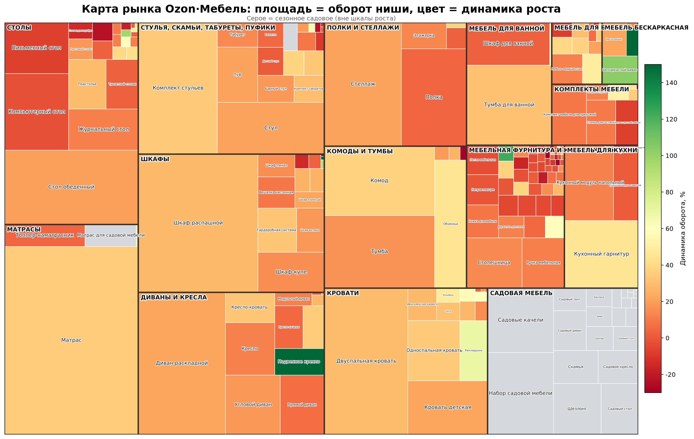
Как читать: самые большие блоки — Матрас (10,6 млрд в категории Матрасы), Шкаф распашной (7,0 млрд), Диван раскладной, Двуспальная кровать, Комплект стульев, Стол обеденный, Стеллаж — по 4–5 млрд ₽. Большинство блоков оранжево-жёлтые (умеренный рост 0–50%); ярко-зелёные вкрапления — точки несезонного роста.
4. Динамика роста: где импульс
Ключевое измерение — рост оборота к предыдущему кварталу. Сезонная садовая мебель исключена, поэтому шкалы отражают устойчивый спрос.
Матрица «Рост × Размер»
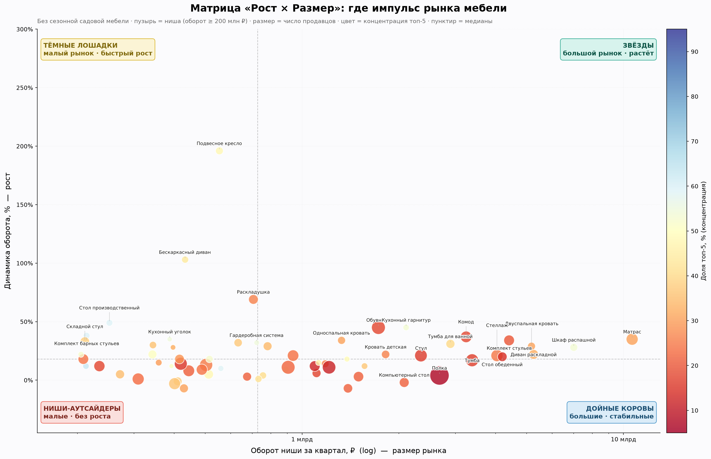
Звёзды (большой рынок + рост) — редки в мебели: сюда тяготеют крупные ниши с ростом 30–50%. Дойные коровы (большие, стабильные) — Матрас, Шкаф распашной, Диван раскладной, Стол обеденный, Комплект стульев. Тёмные лошадки (небольшие, но быстрый рост) — Подвесное кресло (+196%), Бескаркасный диван (+103%), Раскладушка (+69%).
Топ-25 быстрорастущих ниш (без сезонного садового)
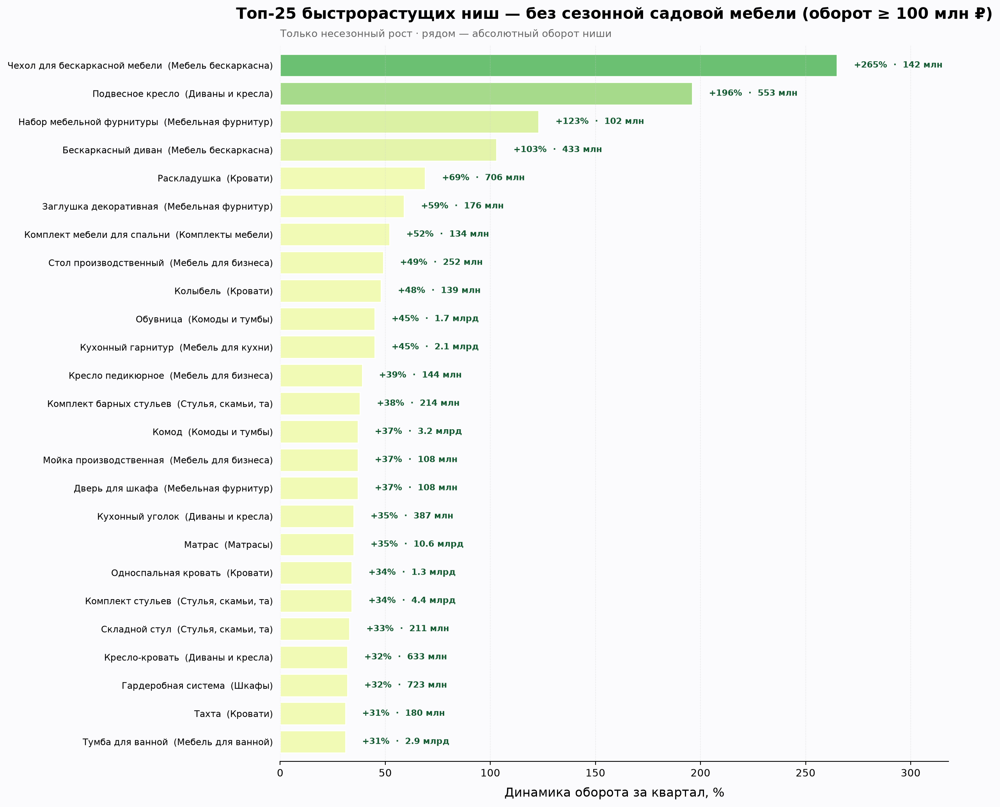
Взрывной рост на малой базе: Чехол для бескаркасной мебели +265%, Подвесное кресло +196%, Набор мебельной фурнитуры +123%, Бескаркасный диван +103%. Рост на большом объёме (важнее для входа): Обувница +45% при обороте 1,7 млрд ₽, Кухонный гарнитур +45% при 2,1 млрд ₽, Односпальная кровать +34% при 1,3 млрд ₽.
5. Концентрация и монополизация
Насколько ниша монополизирована — ключевой вопрос для стратегии входа. Одной доли топ-5 мало: важно, сколько держит единоличный лидер №1 и его отрыв от №2.
Лестница: №1 / топ-2 / топ-5 по крупнейшим нишам
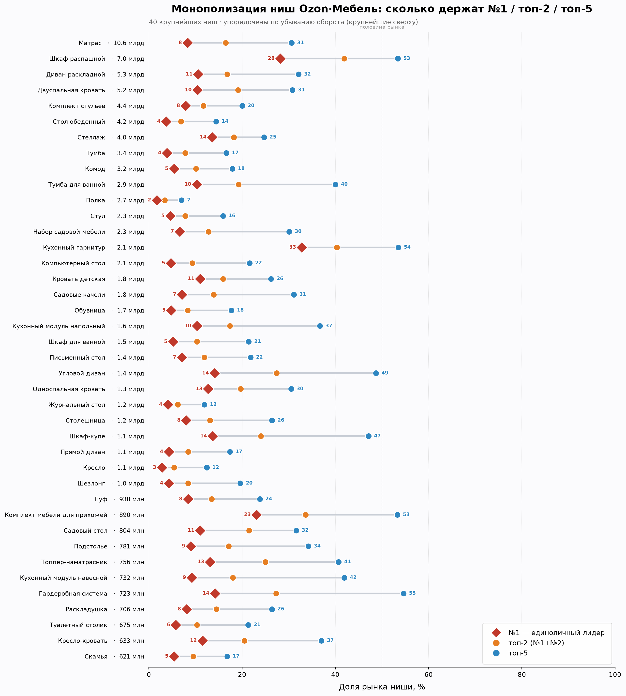
В большинстве крупных ниш даже топ-5 держат 15–35%, а №1 — единицы процентов. Заметные исключения — Кухонный гарнитур (№1 = 33%), Тумба для ванной, Шкаф-купе.
Король или дуумвиры: №1 против №2
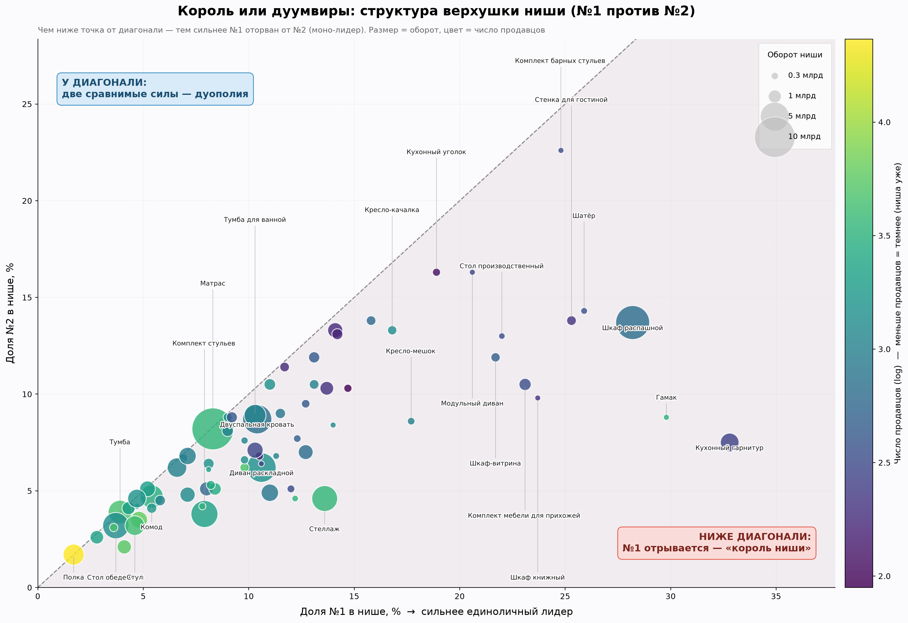
Единоличные короли (№1 сильно больше №2): Кухонный гарнитур, Шкаф распашной, Гамак. Дуополии (две близкие силы): Матрас (Dream Store ≈ LAQY), Комплект стульев, Стенка для гостиной.
Из чего состоит топ-5
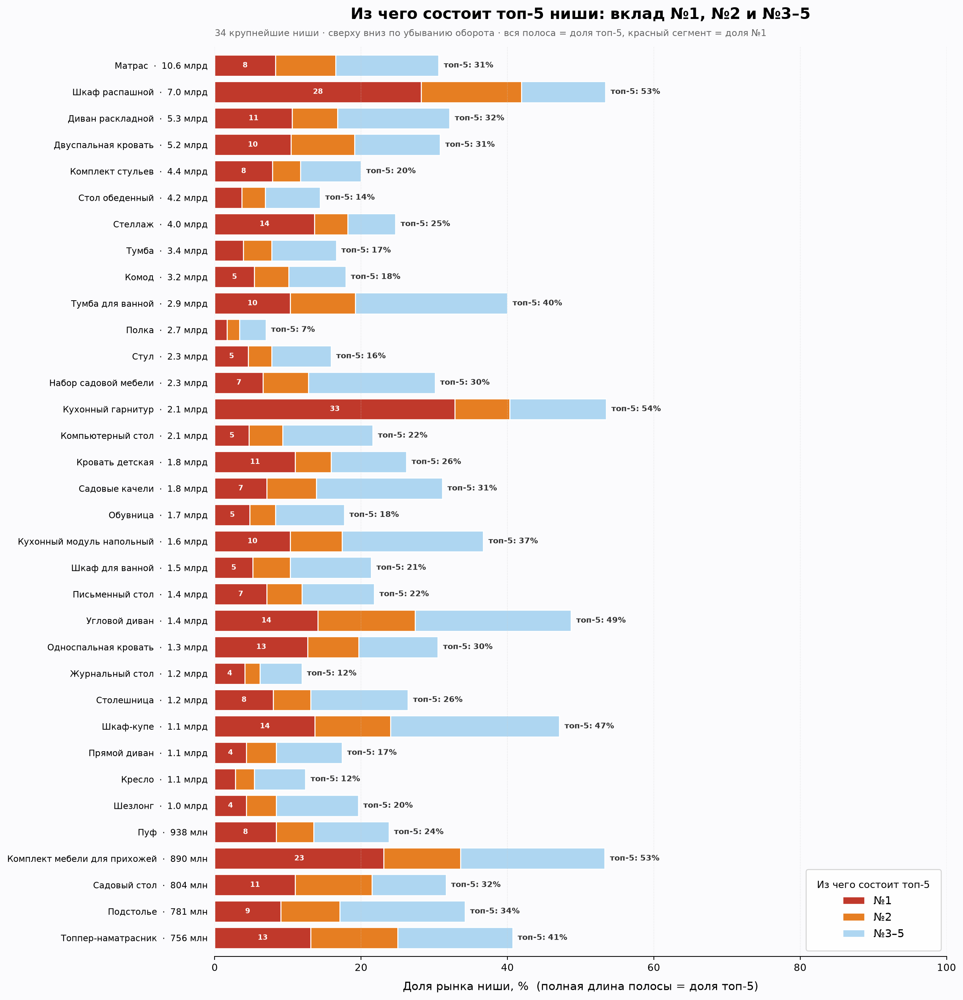
Здесь видно и общую концентрацию (длина полосы), и вклад лидера (красный). Где красный сегмент — почти вся полоса, там топ-5 = фактически один продавец.
Монополизация категорий целиком (индекс HHI)
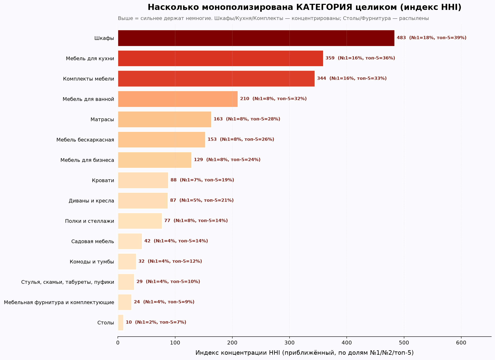
Самые концентрированные категории: Шкафы, Мебель для кухни, Комплекты мебели. Самые распылённые: Столы, Мебельная фурнитура, Стулья — там даже лидер держит крохи, рынок максимально открыт.
Полная таблица концентрации (151 ниша)
Отсортировано по доле №1. «№1÷Топ-5» — доминирование лидера внутри топ-5 (близко к 1 = топ-5 это фактически один продавец).
| Подкатегория | Категория | Оборот | Продавцов | №1 | Топ-2 | Топ-5 | №1÷Топ-5 |
|---|---|---|---|---|---|---|---|
| Трибуна для выступлений | Столы | 12 млн | 57 | 83.1% | 87.5% | 92.9% | 0.89 |
| Купол | Садовая мебель | 8 млн | 82 | 75.5% | 95.9% | 97.3% | 0.78 |
| Барная стойка | Шкафы | 13 млн | 15 | 64.9% | 81.2% | 97.4% | 0.67 |
| Медицинский матрас | Матрасы | 17 млн | 10 | 48.2% | 80.7% | 94.3% | 0.51 |
| Офисный стол | Столы | 15 млн | 88 | 42.8% | 55.7% | 74.5% | 0.57 |
| Обеденная группа | Комплекты мебели | 146 млн | 104 | 41.9% | 71.0% | 87.4% | 0.48 |
| Садовый сундук | Стулья, скамьи, табуреты, пуфики | 165 млн | 151 | 41.3% | 54.8% | 75.1% | 0.55 |
| Корпус шкафа | Шкафы | 5 млн | 22 | 39.4% | 74.3% | 91.8% | 0.43 |
| Буфет | Шкафы | 148 млн | 518 | 39.3% | 47.2% | 62.6% | 0.63 |
| Фурнитура для садовой мебели | Садовая мебель | 44 млн | 208 | 38.8% | 46.0% | 62.1% | 0.62 |
| Кровать раздвижная | Кровати | 49 млн | 205 | 38.1% | 60.2% | 81.1% | 0.47 |
| Запчасти для стеллажа | Полки и стеллажи | 45 млн | 175 | 37.6% | 46.3% | 67.3% | 0.56 |
| Садовый шкаф | Садовая мебель | 27 млн | 148 | 37.3% | 55.0% | 76.6% | 0.49 |
| Полка производственная | Мебель для бизнеса | 28 млн | 69 | 36.9% | 51.2% | 77.7% | 0.47 |
| Стойка ресепшн для ПВЗ | Мебель для бизнеса | 15 млн | 18 | 35.4% | 53.7% | 85.5% | 0.41 |
| Парта | Столы | 62 млн | 138 | 34.2% | 41.5% | 59.5% | 0.57 |
| Кухонный гарнитур | Мебель для кухни | 2.11 млрд | 267 | 32.8% | 40.3% | 53.5% | 0.61 |
| Стойка ресепшн | Столы | 44 млн | 52 | 32.7% | 49.6% | 84.0% | 0.39 |
| Шкаф-кровать | Кровати | 87 млн | 12 | 32.2% | 47.7% | 85.1% | 0.38 |
| Дверь для шкафа | Мебельная фурнитура и комплектующие | 108 млн | 31 | 32.1% | 57.6% | 91.5% | 0.35 |
| Шкаф производственный | Мебель для бизнеса | 72 млн | 38 | 32.0% | 51.5% | 70.5% | 0.45 |
| Шкаф для газового баллона | Садовая мебель | 28 млн | 51 | 31.0% | 53.5% | 77.8% | 0.4 |
| Выкатная корзина | Мебельная фурнитура и комплектующие | 65 млн | 385 | 30.9% | 46.6% | 65.5% | 0.47 |
| Модуль стенки для гостиной | Комплекты мебели | 17 млн | 35 | 30.1% | 50.6% | 78.2% | 0.38 |
| Ремкомплект для садовой мебели | Садовая мебель | 11 млн | 168 | 30.0% | 53.0% | 83.9% | 0.36 |
| Гамак | Садовая мебель | 215 млн | 3 172 | 29.8% | 38.6% | 49.9% | 0.6 |
| Пеленальный стол | Комоды и тумбы | 83 млн | 465 | 29.4% | 40.0% | 56.7% | 0.52 |
| Шкаф распашной | Шкафы | 7.01 млрд | 643 | 28.2% | 41.9% | 53.4% | 0.53 |
| Швейный уголок | Мебель для бизнеса | 39 млн | 30 | 27.7% | 50.2% | 81.3% | 0.34 |
| Стул откидной | Стулья, скамьи, табуреты, пуфики | 7 млн | 206 | 27.1% | 44.7% | 66.0% | 0.41 |
| Кромка мебельная безклеевая | Мебельная фурнитура и комплектующие | 16 млн | 143 | 26.9% | 44.3% | 64.7% | 0.42 |
| Комплект мебели для ванной | Мебель для ванной | 40 млн | 53 | 26.3% | 44.7% | 68.8% | 0.38 |
| Шатёр | Садовая мебель | 275 млн | 363 | 25.9% | 40.2% | 62.7% | 0.41 |
| Аксессуары для качели | Садовая мебель | 80 млн | 689 | 25.9% | 44.0% | 58.0% | 0.45 |
| Стенка для гостиной | Комплекты мебели | 559 млн | 212 | 25.3% | 39.1% | 58.7% | 0.43 |
| Комплект барных стульев | Стулья, скамьи, табуреты, пуфики | 214 млн | 332 | 24.8% | 47.4% | 59.2% | 0.42 |
| Комплект мебели для ПВЗ | Мебель для бизнеса | 108 млн | 52 | 24.2% | 41.6% | 63.9% | 0.38 |
| Шкаф книжный | Шкафы | 205 млн | 206 | 23.7% | 33.5% | 52.3% | 0.45 |
| Шкаф складной | Шкафы | 143 млн | 950 | 23.5% | 34.5% | 50.9% | 0.46 |
| Комплект мебели для прихожей | Комплекты мебели | 890 млн | 346 | 23.1% | 33.6% | 53.3% | 0.43 |
| Комплект офисной мебели | Комплекты мебели | 4 млн | 32 | 23.0% | 43.5% | 81.0% | 0.28 |
| Сундук | Стулья, скамьи, табуреты, пуфики | 26 млн | 122 | 22.6% | 36.2% | 56.7% | 0.4 |
| Тахта | Кровати | 180 млн | 96 | 22.4% | 38.1% | 57.8% | 0.39 |
| Ящик выдвижной мебельный | Мебельная фурнитура и комплектующие | 83 млн | 301 | 22.3% | 34.9% | 58.5% | 0.38 |
| Стол производственный | Мебель для бизнеса | 252 млн | 334 | 22.0% | 35.0% | 59.0% | 0.37 |
| Аксессуары для беседки | Садовая мебель | 7 млн | 164 | 22.0% | 39.2% | 67.8% | 0.32 |
| Шкаф-витрина | Шкафы | 515 млн | 486 | 21.7% | 33.6% | 52.2% | 0.42 |
| Колыбель | Кровати | 139 млн | 368 | 21.2% | 40.3% | 60.8% | 0.35 |
| Каркас кровати | Кровати | 126 млн | 74 | 21.0% | 33.8% | 68.0% | 0.31 |
| Доводчик мебельный | Мебельная фурнитура и комплектующие | 8 млн | 186 | 20.8% | 40.1% | 72.6% | 0.29 |
| Подлокотник для стола | Столы | 10 млн | 386 | 20.8% | 28.1% | 48.2% | 0.43 |
| Модульный диван | Диваны и кресла | 213 млн | 273 | 20.6% | 36.9% | 63.0% | 0.33 |
| Комплект мягкой мебели | Комплекты мебели | 46 млн | 32 | 20.1% | 38.0% | 70.1% | 0.29 |
| Стул для музыканта | Стулья, скамьи, табуреты, пуфики | 8 млн | 248 | 20.1% | 29.5% | 47.1% | 0.43 |
| Изголовье кровати | Мебельная фурнитура и комплектующие | 8 млн | 56 | 19.9% | 30.7% | 54.8% | 0.36 |
| Барный стол | Столы | 74 млн | 218 | 19.1% | 31.4% | 49.7% | 0.38 |
| Подвесной стол | Столы | 30 млн | 192 | 19.0% | 32.3% | 48.8% | 0.39 |
| Кухонный уголок | Диваны и кресла | 387 млн | 114 | 18.9% | 35.2% | 54.8% | 0.34 |
| Антресоль мебельная | Шкафы | 74 млн | 136 | 18.5% | 35.8% | 60.5% | 0.31 |
| Садовая кухня | Садовая мебель | 109 млн | 296 | 18.2% | 34.4% | 61.9% | 0.29 |
| Примерочная кабина | Мебель для бизнеса | 9 млн | 49 | 18.0% | 29.1% | 52.8% | 0.34 |
| Аксессуары для гамака | Садовая мебель | 14 млн | 548 | 18.0% | 32.8% | 49.5% | 0.36 |
| Кресло-мешок | Мебель бескаркасная | 342 млн | 998 | 17.7% | 26.3% | 50.5% | 0.35 |
| Бескаркасный пуф | Мебель бескаркасная | 27 млн | 394 | 17.5% | 32.1% | 59.3% | 0.3 |
| Кресло-качалка | Диваны и кресла | 512 млн | 1 356 | 16.8% | 30.1% | 48.2% | 0.35 |
| Комплект мебели для спальни | Комплекты мебели | 134 млн | 96 | 16.8% | 31.9% | 53.8% | 0.31 |
| Подставка под системный блок | Столы | 30 млн | 495 | 16.5% | 26.3% | 40.1% | 0.41 |
| Заглушка декоративная | Мебельная фурнитура и комплектующие | 176 млн | 1 707 | 15.9% | 21.8% | 34.1% | 0.47 |
| Подвесное кресло | Диваны и кресла | 553 млн | 610 | 15.8% | 29.6% | 48.0% | 0.33 |
| Детский стол | Столы | 42 млн | 324 | 15.7% | 23.8% | 43.7% | 0.36 |
| Стол-стеллаж | Столы | 38 млн | 65 | 15.5% | 27.8% | 61.4% | 0.25 |
| Мебель медицинская | Мебель для бизнеса | 392 млн | 89 | 14.7% | 25.0% | 50.9% | 0.29 |
| Чехол для бескаркасной мебели | Мебель бескаркасная | 142 млн | 1 187 | 14.3% | 28.0% | 43.0% | 0.33 |
| Гардеробная система | Шкафы | 723 млн | 159 | 14.2% | 27.3% | 54.6% | 0.26 |
| Угловой диван | Диваны и кресла | 1.38 млрд | 182 | 14.1% | 27.4% | 48.7% | 0.29 |
| Наполнение для кухонного модуля | Мебель для кухни | 54 млн | 759 | 14.1% | 22.0% | 37.1% | 0.38 |
| Штанга в шкаф | Мебельная фурнитура и комплектующие | 54 млн | 374 | 14.1% | 24.3% | 52.4% | 0.27 |
| Шкаф навесной | Шкафы | 85 млн | 218 | 14.1% | 24.3% | 45.1% | 0.31 |
| Каркас для садовой мебели | Садовая мебель | 96 млн | 426 | 14.0% | 20.7% | 36.5% | 0.38 |
| Складной стул | Стулья, скамьи, табуреты, пуфики | 211 млн | 1 269 | 14.0% | 22.4% | 38.1% | 0.37 |
| Кушетка | Диваны и кресла | 57 млн | 333 | 13.9% | 22.3% | 45.1% | 0.31 |
| Шкаф-купе | Шкафы | 1.13 млрд | 202 | 13.7% | 24.0% | 47.1% | 0.29 |
| Стеллаж | Полки и стеллажи | 4.04 млрд | 3 558 | 13.6% | 18.2% | 24.7% | 0.55 |
| Запчасти для гардеробной системы | Мебельная фурнитура и комплектующие | 172 млн | 1 061 | 13.5% | 21.3% | 38.5% | 0.35 |
| Топпер-наматрасник | Матрасы | 756 млн | 438 | 13.1% | 25.0% | 40.7% | 0.32 |
| Садовое кресло | Садовая мебель | 558 млн | 1 034 | 13.1% | 23.6% | 34.0% | 0.39 |
| Односпальная кровать | Кровати | 1.33 млрд | 670 | 12.7% | 19.7% | 30.5% | 0.42 |
| Бескаркасный диван | Мебель бескаркасная | 433 млн | 399 | 12.7% | 22.2% | 43.9% | 0.29 |
| Табурет-стремянка | Стулья, скамьи, табуреты, пуфики | 145 млн | 1 783 | 12.4% | 22.0% | 38.3% | 0.32 |
| Комплект табуретов | Стулья, скамьи, табуреты, пуфики | 344 млн | 476 | 12.3% | 20.0% | 35.9% | 0.34 |
| Садовый стул | Садовая мебель | 255 млн | 3 351 | 12.2% | 16.8% | 27.3% | 0.45 |
| Запчасти для кровати | Мебельная фурнитура и комплектующие | 46 млн | 440 | 12.1% | 18.7% | 34.3% | 0.35 |
| Шкаф-пенал | Шкафы | 358 млн | 310 | 12.0% | 17.1% | 29.9% | 0.4 |
| Садовый диван | Садовая мебель | 553 млн | 175 | 11.7% | 23.1% | 47.8% | 0.24 |
| Газлифт мебельный | Мебельная фурнитура и комплектующие | 133 млн | 709 | 11.6% | 23.2% | 42.6% | 0.27 |
| Кресло-кровать | Диваны и кресла | 633 млн | 797 | 11.5% | 20.5% | 37.0% | 0.31 |
| Банкетка | Стулья, скамьи, табуреты, пуфики | 271 млн | 1 103 | 11.3% | 18.1% | 35.0% | 0.32 |
| Кровать детская | Кровати | 1.82 млрд | 800 | 11.0% | 15.9% | 26.2% | 0.42 |
| Садовый стол | Садовая мебель | 804 млн | 1 484 | 11.0% | 21.5% | 31.6% | 0.35 |
| Этажерка для обуви | Комоды и тумбы | 66 млн | 1 679 | 10.8% | 20.9% | 42.3% | 0.26 |
| Диван раскладной | Диваны и кресла | 5.25 млрд | 1 483 | 10.6% | 16.8% | 32.1% | 0.33 |
| Беседка | Садовая мебель | 202 млн | 279 | 10.6% | 17.0% | 34.9% | 0.3 |
| Двухъярусная кровать | Кровати | 397 млн | 140 | 10.5% | 17.3% | 32.4% | 0.32 |
| Двуспальная кровать | Кровати | 5.17 млрд | 654 | 10.4% | 19.1% | 30.8% | 0.34 |
| Тумба для ванной | Мебель для ванной | 2.89 млрд | 1 099 | 10.3% | 19.2% | 40.0% | 0.26 |
| Кухонный модуль напольный | Мебель для кухни | 1.56 млрд | 293 | 10.3% | 17.4% | 36.7% | 0.28 |
| Сервировочный стол | Столы | 33 млн | 399 | 10.1% | 19.0% | 38.7% | 0.26 |
| Кресло детское | Стулья, скамьи, табуреты, пуфики | 23 млн | 1 007 | 9.9% | 19.4% | 33.5% | 0.3 |
| Кровать-чердак | Кровати | 101 млн | 71 | 9.8% | 18.4% | 38.2% | 0.26 |
| Этажерка | Полки и стеллажи | 503 млн | 4 951 | 9.8% | 16.0% | 25.2% | 0.39 |
| Садовый тент | Садовая мебель | 315 млн | 1 119 | 9.8% | 17.4% | 35.9% | 0.27 |
| Барный стул | Стулья, скамьи, табуреты, пуфики | 416 млн | 1 415 | 9.8% | 16.4% | 28.9% | 0.34 |
| Стол-книжка | Столы | 158 млн | 885 | 9.7% | 19.2% | 37.0% | 0.26 |
| Столик для ноутбука | Столы | 166 млн | 1 093 | 9.3% | 16.4% | 29.5% | 0.32 |
| Кухонный модуль навесной | Мебель для кухни | 732 млн | 412 | 9.2% | 18.0% | 41.9% | 0.22 |
| Матрас для садовой мебели | Матрасы | 483 млн | 1 478 | 9.0% | 17.8% | 39.6% | 0.23 |
| Подстолье | Столы | 781 млн | 998 | 9.0% | 17.1% | 34.2% | 0.26 |
| Консоль | Столы | 160 млн | 988 | 8.9% | 13.0% | 22.5% | 0.4 |
| Стеллаж для ванной | Полки и стеллажи | 177 млн | 745 | 8.6% | 14.8% | 29.5% | 0.29 |
| Пуф | Стулья, скамьи, табуреты, пуфики | 938 млн | 2 869 | 8.4% | 13.5% | 23.8% | 0.35 |
| Матрас | Матрасы | 10.64 млрд | 3 473 | 8.3% | 16.5% | 30.6% | 0.27 |
| Запчасти для стула | Стулья, скамьи, табуреты, пуфики | 46 млн | 1 175 | 8.3% | 16.2% | 29.9% | 0.28 |
| Вешалка настенная | Шкафы | 488 млн | 2 571 | 8.2% | 13.5% | 24.0% | 0.34 |
| Раскладушка | Кровати | 706 млн | 1 486 | 8.1% | 14.5% | 26.4% | 0.31 |
| Приставной столик | Столы | 209 млн | 2 078 | 8.1% | 14.2% | 24.2% | 0.33 |
| Столешница | Мебельная фурнитура и комплектующие | 1.18 млрд | 575 | 8.0% | 13.1% | 26.4% | 0.3 |
| Комплект стульев | Стулья, скамьи, табуреты, пуфики | 4.41 млрд | 2 193 | 7.9% | 11.7% | 20.0% | 0.4 |
| Детский стул | Стулья, скамьи, табуреты, пуфики | 309 млн | 3 420 | 7.8% | 12.0% | 23.2% | 0.34 |
| Садовые качели | Садовая мебель | 1.80 млрд | 940 | 7.1% | 13.9% | 31.1% | 0.23 |
| Письменный стол | Столы | 1.39 млрд | 1 276 | 7.1% | 11.9% | 21.8% | 0.33 |
| Набор мебельной фурнитуры | Мебельная фурнитура и комплектующие | 102 млн | 3 266 | 7.0% | 12.7% | 22.5% | 0.31 |
| Комплект детской мебели | Комплекты мебели | 429 млн | 1 022 | 6.9% | 13.6% | 30.4% | 0.23 |
| Мебельный фасад | Мебельная фурнитура и комплектующие | 110 млн | 258 | 6.9% | 12.7% | 29.0% | 0.24 |
| Подставка под ноги | Стулья, скамьи, табуреты, пуфики | 67 млн | 2 015 | 6.9% | 12.2% | 26.6% | 0.26 |
| Набор садовой мебели | Садовая мебель | 2.29 млрд | 1 045 | 6.6% | 12.8% | 30.1% | 0.22 |
| Туалетный столик | Столы | 675 млн | 1 026 | 5.8% | 10.3% | 21.3% | 0.27 |
| Комод | Комоды и тумбы | 3.24 млрд | 2 953 | 5.4% | 10.1% | 17.9% | 0.3 |
| Скамья | Садовая мебель | 621 млн | 1 741 | 5.4% | 9.5% | 16.8% | 0.32 |
| Шкаф для ванной | Мебель для ванной | 1.50 млрд | 1 919 | 5.2% | 10.3% | 21.4% | 0.24 |
| Обувница | Комоды и тумбы | 1.73 млрд | 6 124 | 4.8% | 8.3% | 17.7% | 0.27 |
| Держатель для полки | Мебельная фурнитура и комплектующие | 234 млн | 2 539 | 4.7% | 8.9% | 17.8% | 0.26 |
| Компьютерный стол | Столы | 2.08 млрд | 1 560 | 4.7% | 9.3% | 21.6% | 0.22 |
| Стул | Стулья, скамьи, табуреты, пуфики | 2.34 млрд | 4 171 | 4.6% | 7.8% | 15.9% | 0.29 |
| Прямой диван | Диваны и кресла | 1.11 млрд | 1 025 | 4.3% | 8.4% | 17.4% | 0.25 |
| Шезлонг | Садовая мебель | 1.03 млрд | 2 194 | 4.3% | 8.4% | 19.6% | 0.22 |
| Журнальный стол | Столы | 1.21 млрд | 5 467 | 4.1% | 6.2% | 11.9% | 0.34 |
| Тумба | Комоды и тумбы | 3.38 млрд | 4 635 | 3.9% | 7.8% | 16.6% | 0.23 |
| Стол обеденный | Столы | 4.20 млрд | 1 398 | 3.7% | 6.9% | 14.4% | 0.26 |
| Табурет | Стулья, скамьи, табуреты, пуфики | 420 млн | 4 549 | 3.6% | 6.7% | 14.9% | 0.24 |
| Кресло | Диваны и кресла | 1.09 млрд | 2 192 | 2.8% | 5.4% | 12.4% | 0.23 |
| Полка | Полки и стеллажи | 2.68 млрд | 23 181 | 1.7% | 3.4% | 7.0% | 0.24 |
6. Карта ниш: размер × конкуренция × чек
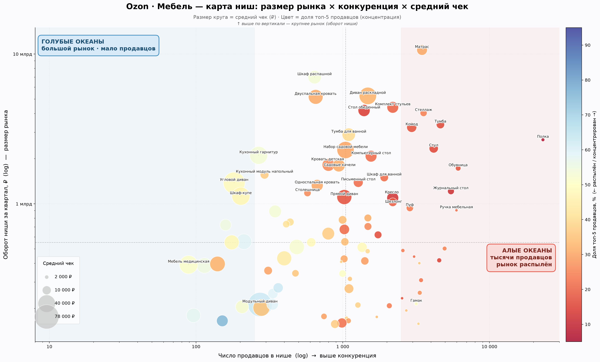
Сводная карта помогает быстро увидеть характер ниши. Верх-лево (большой рынок, мало продавцов) — привлекательные ниши: Шкаф распашной, Диван раскладной. Крупные круги (высокий чек) — премиум-ниши, почти все слева (мало игроков): Модульный диван, Угловой диван, Кухонный гарнитур. Низ-право (мелкий чек, тысячи продавцов) — «алые океаны»: Полка, Ручка мебельная, Обувница.
7. Игроки рынка
Кто контролирует максимум ниш и как устроены их портфели.
«Многостаночники» — кто лидирует в максимуме ниш
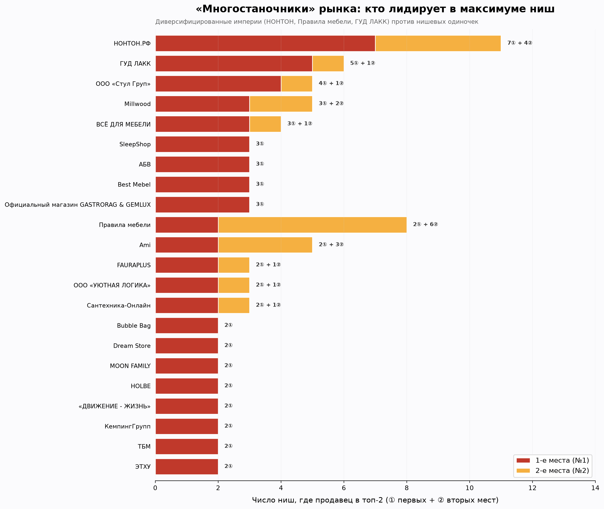
НОНТОН.РФ — безусловная империя: топ-2 в 11 нишах (7 первых мест). Правила мебели — 8 ниш, но почти все вторые места (вечный №2 за НОНТОНом в комплектах, кухне, стенках). ГУД ЛАКК, Ami, Millwood, ООО «Стул Груп» — по 5–6 ниш.
Портфель топ-игроков (тепловая карта)
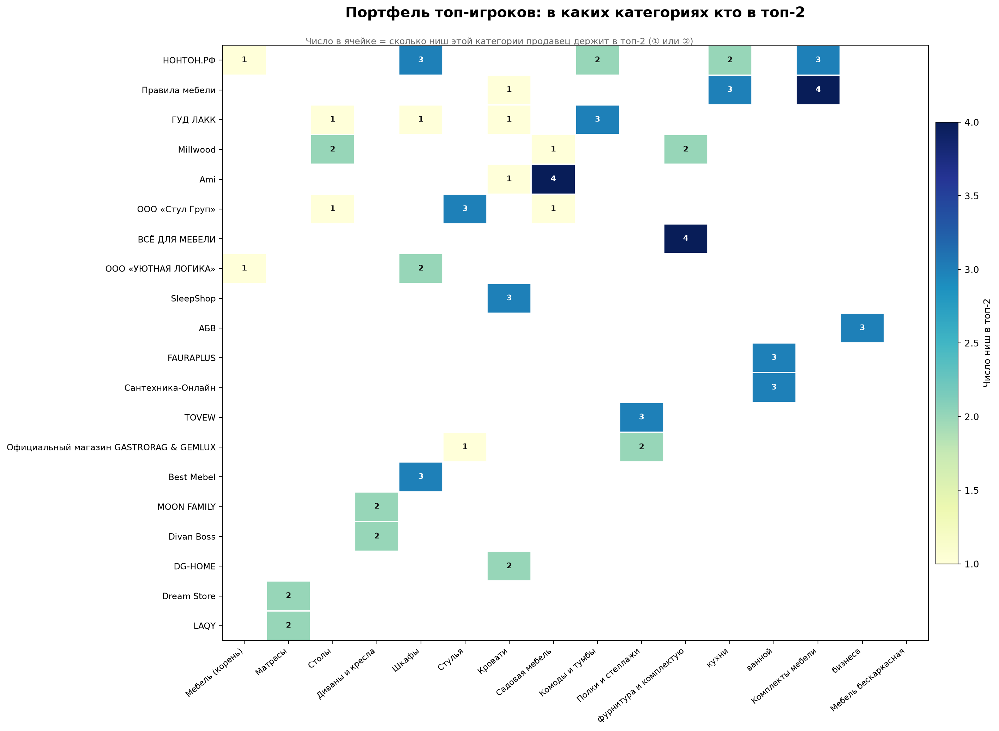
Диверсифицированные игроки размазаны по нескольким категориям (НОНТОН — 6 категорий), узкие специалисты держат одну (SleepShop — Кровати, FAURAPLUS — Ванная, ВСЁ ДЛЯ МЕБЕЛИ — Фурнитура).
Приоритетный тир для досье — 25 лидеров категорий
«Крупная рыба» — кто держит категорию целиком, а не отдельную нишу. С них логично начинать сбор досье.
| Продавец | Где лидирует (категория · позиция) |
|---|---|
| НОНТОН.РФ | Мебель ①(корень) · Комплекты мебели ① · Мебель для кухни ① · Комоды и тумбы ② · Шкафы ② (+ Шкаф-купе ①) |
| ООО «УЮТНАЯ ЛОГИКА» | Шкафы ① · Мебель ②(корень) |
| MOON FAMILY | Диваны и кресла ① |
| Divan Boss | Диваны и кресла ② |
| ГУД ЛАКК | Комоды и тумбы ① |
| Правила мебели | Комплекты мебели ② · Мебель для кухни ② |
| SleepShop | Кровати ① |
| DG-HOME | Кровати ② |
| Dream Store | Матрасы ① |
| LAQY | Матрасы ② |
| Bubble Bag | Мебель бескаркасная ① |
| GoodPoof | Мебель бескаркасная ② |
| АБВ | Мебель для бизнеса ① |
| PRO-MEDIC RU | Мебель для бизнеса ② |
| FAURAPLUS | Мебель для ванной ① |
| Сантехника-Онлайн | Мебель для ванной ② |
| ВСЁ ДЛЯ МЕБЕЛИ | Мебельная фурнитура и комплектующие ① |
| Millwood | Столы ① · Мебельная фурнитура и комплектующие ② |
| LAREN | Столы ② (+ Стол обеденный ①) |
| Официальный магазин GASTRORAG & GEMLUX | Полки и стеллажи ① |
| TOVEW | Полки и стеллажи ② |
| Ami | Садовая мебель ① (+ Шатёр ①, Тахта ②, Садовое кресло ②, Шезлонг ②) |
| Sundays | Садовая мебель ② |
| ООО «Стул Груп» | Стулья/скамьи/табуреты ① (+ Комплект стульев ①, Садовый стол ①, Барный стол ①) |
| АйДа Мебель | Стулья/скамьи/табуреты ② |
Все продавцы-лидеры (250)
★ — входит в приоритетный тир. Отсортировано по числу возглавляемых категорий, затем по числу первых мест.
| Продавец | Возглавляет категорий | 1-е места | 2-е места | Всего | Категории |
|---|---|---|---|---|---|
| НОНТОН.РФ ★ | 3 | 7 | 4 | 11 | Комоды и тумбы, Комплекты мебели, Мебель (корень), Мебель для кухни, Шкафы |
| ГУД ЛАКК ★ | 1 | 5 | 1 | 6 | Комоды и тумбы, Кровати, Столы, Шкафы |
| ООО «Стул Груп» ★ | 1 | 4 | 1 | 5 | Садовая мебель, Столы, Стулья, скамьи, табуреты, пуфики |
| Millwood ★ | 1 | 3 | 2 | 5 | Мебельная фурнитура и комплектующие, Садовая мебель, Столы |
| ВСЁ ДЛЯ МЕБЕЛИ ★ | 1 | 3 | 1 | 4 | Мебельная фурнитура и комплектующие |
| SleepShop ★ | 1 | 3 | 0 | 3 | Кровати |
| АБВ ★ | 1 | 3 | 0 | 3 | Мебель для бизнеса |
| Ami ★ | 1 | 2 | 3 | 5 | Кровати, Садовая мебель |
| FAURAPLUS ★ | 1 | 2 | 1 | 3 | Мебель для ванной |
| ООО «УЮТНАЯ ЛОГИКА» ★ | 1 | 2 | 1 | 3 | Мебель (корень), Шкафы |
| Bubble Bag ★ | 1 | 2 | 0 | 2 | Мебель бескаркасная |
| Dream Store ★ | 1 | 2 | 0 | 2 | Матрасы |
| MOON FAMILY ★ | 1 | 2 | 0 | 2 | Диваны и кресла |
| GASTRORAG & GEMLUX | 1 | 1 | 0 | 1 | Полки и стеллажи |
| Best Mebel | 0 | 3 | 0 | 3 | Шкафы |
| Официальный магазин GASTRORAG & GEMLUX ★ | 0 | 3 | 0 | 3 | Полки и стеллажи, Стулья, скамьи, табуреты, пуфики |
| Правила мебели ★ | 0 | 2 | 6 | 8 | Комплекты мебели, Кровати, Мебель для кухни |
| Сантехника-Онлайн ★ | 0 | 2 | 1 | 3 | Мебель для ванной |
| HOLBE | 0 | 2 | 0 | 2 | Мебель для кухни |
| «ДВИЖЕНИЕ - ЖИЗНЬ» | 0 | 2 | 0 | 2 | Стулья, скамьи, табуреты, пуфики |
| КемпингГрупп | 0 | 2 | 0 | 2 | Диваны и кресла |
| ТБМ | 0 | 2 | 0 | 2 | Мебельная фурнитура и комплектующие |
| ЭТХУ | 0 | 2 | 0 | 2 | Столы |
| TOVEW ★ | 0 | 1 | 2 | 3 | Полки и стеллажи |
| DOBRIN | 0 | 1 | 1 | 2 | Стулья, скамьи, табуреты, пуфики |
| Divan Boss ★ | 0 | 1 | 1 | 2 | Диваны и кресла |
| FunDesk | 0 | 1 | 1 | 2 | Комплекты мебели, Столы |
| Fung Yard | 0 | 1 | 1 | 2 | Садовая мебель |
| GARDECK | 0 | 1 | 1 | 2 | Садовая мебель, Стулья, скамьи, табуреты, пуфики |
| Global Wave | 0 | 1 | 1 | 2 | Садовая мебель |
| GoodPoof ★ | 0 | 1 | 1 | 2 | Мебель бескаркасная |
| LAREN ★ | 0 | 1 | 1 | 2 | Столы |
| MBL Мебель для бизнеса | 0 | 1 | 1 | 2 | Столы |
| PRO-MEDIC RU ★ | 0 | 1 | 1 | 2 | Мебель для бизнеса |
| SGMedical shop | 0 | 1 | 1 | 2 | Матрасы |
| Sundays ★ | 0 | 1 | 1 | 2 | Садовая мебель |
| ООО «ЗМИ» | 0 | 1 | 1 | 2 | Комоды и тумбы, Шкафы |
| ABCD STORE | 0 | 1 | 0 | 1 | Стулья, скамьи, табуреты, пуфики |
| ALEXCARE | 0 | 1 | 0 | 1 | Комоды и тумбы |
| ANSO | 0 | 1 | 0 | 1 | Столы |
| Akur Design Studio | 0 | 1 | 0 | 1 | Столы |
| Alba Мебель | 0 | 1 | 0 | 1 | Комплекты мебели |
| BABYROX | 0 | 1 | 0 | 1 | Столы |
| BONMEBEL | 0 | 1 | 0 | 1 | Диваны и кресла |
| Barberries | 0 | 1 | 0 | 1 | Диваны и кресла |
| Bio-Line | 0 | 1 | 0 | 1 | Матрасы |
| COBBE | 0 | 1 | 0 | 1 | Полки и стеллажи |
| CUBE | 0 | 1 | 0 | 1 | Шкафы |
| DEEPLIFE | 0 | 1 | 0 | 1 | Столы |
| Daiva Casa | 0 | 1 | 0 | 1 | Стулья, скамьи, табуреты, пуфики |
| Design Dom | 0 | 1 | 0 | 1 | Столы |
| DoNext | 0 | 1 | 0 | 1 | Столы |
| Dominanta | 0 | 1 | 0 | 1 | Столы |
| ELITE-MARKET | 0 | 1 | 0 | 1 | Стулья, скамьи, табуреты, пуфики |
| EVERENA | 0 | 1 | 0 | 1 | Мебель бескаркасная |
| FEROOM GROUP (Ферум груп) | 0 | 1 | 0 | 1 | Садовая мебель |
| GetMet | 0 | 1 | 0 | 1 | Полки и стеллажи |
| Glider | 0 | 1 | 0 | 1 | Стулья, скамьи, табуреты, пуфики |
| JEONIX | 0 | 1 | 0 | 1 | Садовая мебель |
| KJOPMANN | 0 | 1 | 0 | 1 | Садовая мебель |
| KRASDIVAN | 0 | 1 | 0 | 1 | Диваны и кресла |
| Laavi Home | 0 | 1 | 0 | 1 | Мебель бескаркасная |
| Master Pro | 0 | 1 | 0 | 1 | Стулья, скамьи, табуреты, пуфики |
| Mebel Made | 0 | 1 | 0 | 1 | Стулья, скамьи, табуреты, пуфики |
| Mebelson | 0 | 1 | 0 | 1 | Столы |
| OOO «Мебельбай» | 0 | 1 | 0 | 1 | Комплекты мебели |
| ORMATEK | 0 | 1 | 0 | 1 | Матрасы |
| Pituso | 0 | 1 | 0 | 1 | Кровати |
| RayVol | 0 | 1 | 0 | 1 | Кровати |
| Re-seption | 0 | 1 | 0 | 1 | Столы |
| SKANDILINE | 0 | 1 | 0 | 1 | Комплекты мебели |
| STEELFORGE | 0 | 1 | 0 | 1 | Садовая мебель |
| STYLINT | 0 | 1 | 0 | 1 | Кровати |
| Soda decor | 0 | 1 | 0 | 1 | Стулья, скамьи, табуреты, пуфики |
| Top Find | 0 | 1 | 0 | 1 | Стулья, скамьи, табуреты, пуфики |
| Venerdi | 0 | 1 | 0 | 1 | Столы |
| WOOD&STEEL | 0 | 1 | 0 | 1 | Шкафы |
| WoodМаркет | 0 | 1 | 0 | 1 | Мебельная фурнитура и комплектующие |
| XedaR | 0 | 1 | 0 | 1 | Стулья, скамьи, табуреты, пуфики |
| АГРО-ПРОФИ | 0 | 1 | 0 | 1 | Садовая мебель |
| АКБИТ Плюс | 0 | 1 | 0 | 1 | Садовая мебель |
| Альтера | 0 | 1 | 0 | 1 | Мебельная фурнитура и комплектующие |
| БЕЛОРУССКИЙ ДОМ | 0 | 1 | 0 | 1 | Шкафы |
| БИГТВ77 | 0 | 1 | 0 | 1 | Стулья, скамьи, табуреты, пуфики |
| Бизнес мебель | 0 | 1 | 0 | 1 | Мебель для бизнеса |
| ВСК-мебель | 0 | 1 | 0 | 1 | Шкафы |
| ВашДвор | 0 | 1 | 0 | 1 | Садовая мебель |
| Гамак и Спальник | 0 | 1 | 0 | 1 | Садовая мебель |
| ГрафМаш НЗ | 0 | 1 | 0 | 1 | Диваны и кресла |
| Группа компаний «КРОН» | 0 | 1 | 0 | 1 | Столы |
| Дом Мебели | 0 | 1 | 0 | 1 | Столы |
| КiТ | 0 | 1 | 0 | 1 | Комплекты мебели |
| Кетершоп | 0 | 1 | 0 | 1 | Стулья, скамьи, табуреты, пуфики |
| Коллекция Мебели | 0 | 1 | 0 | 1 | Мебель для бизнеса |
| Комплект Profi | 0 | 1 | 0 | 1 | Мебельная фурнитура и комплектующие |
| Крепкая-Кровать | 0 | 1 | 0 | 1 | Мебельная фурнитура и комплектующие |
| Кьюмен | 0 | 1 | 0 | 1 | Мебельная фурнитура и комплектующие |
| ЛЕНТА | 0 | 1 | 0 | 1 | Садовая мебель |
| МАСТЕРиКО | 0 | 1 | 0 | 1 | Мебельная фурнитура и комплектующие |
| Мебель Lina Loft | 0 | 1 | 0 | 1 | Комоды и тумбы |
| Мебель-Цех | 0 | 1 | 0 | 1 | Столы |
| Мебельная Фабрика «ТРИ БОБРА» | 0 | 1 | 0 | 1 | Комплекты мебели |
| Мебельная Эстетика | 0 | 1 | 0 | 1 | Комоды и тумбы |
| Метхоум | 0 | 1 | 0 | 1 | Садовая мебель |
| ООО «Дельта Дом» | 0 | 1 | 0 | 1 | Шкафы |
| ООО «ЗПИ «Альтернатива» | 0 | 1 | 0 | 1 | Садовая мебель |
| ООО «Фабрика Новита» | 0 | 1 | 0 | 1 | Кровати |
| ООО Вариант 999 | 0 | 1 | 0 | 1 | Мебель для бизнеса |
| ОПТИПРОМ-А | 0 | 1 | 0 | 1 | Кровати |
| Осилис | 0 | 1 | 0 | 1 | Садовая мебель |
| РегионМебель (63mebel) | 0 | 1 | 0 | 1 | Мебельная фурнитура и комплектующие |
| Росмагнит | 0 | 1 | 0 | 1 | Мебельная фурнитура и комплектующие |
| Самсон | 0 | 1 | 0 | 1 | Стулья, скамьи, табуреты, пуфики |
| Селин | 0 | 1 | 0 | 1 | Диваны и кресла |
| Сима-Ленд | 0 | 1 | 0 | 1 | Комоды и тумбы |
| Стальпром | 0 | 1 | 0 | 1 | Кровати |
| ТОВМАН САД | 0 | 1 | 0 | 1 | Садовая мебель |
| Твердыня | 0 | 1 | 0 | 1 | Стулья, скамьи, табуреты, пуфики |
| Твой ПВЗ | 0 | 1 | 0 | 1 | Мебель для бизнеса |
| Титан-ГС - двери на заказ | 0 | 1 | 0 | 1 | Мебельная фурнитура и комплектующие |
| Торговая, офисная и домашняя мебель | 0 | 1 | 0 | 1 | Столы |
| Три муравья Основной | 0 | 1 | 0 | 1 | Садовая мебель |
| УЮТНО и ТОЧКА | 0 | 1 | 0 | 1 | Мебель для бизнеса |
| Фабрика Divan24 | 0 | 1 | 0 | 1 | Диваны и кресла |
| Фабрика беседок | 0 | 1 | 0 | 1 | Садовая мебель |
| Хорошая мебель | 0 | 1 | 0 | 1 | Мебель для кухни |
| ШТОРМ | 0 | 1 | 0 | 1 | Мебельная фурнитура и комплектующие |
| Эльдизайн | 0 | 1 | 0 | 1 | Шкафы |
| Энх | 0 | 1 | 0 | 1 | Кровати |
| ASTELA | 0 | 0 | 2 | 2 | Садовая мебель |
| DG-HOME ★ | 0 | 0 | 2 | 2 | Кровати |
| FLER | 0 | 0 | 2 | 2 | Мебель бескаркасная, Садовая мебель |
| GAME CHAIRS | 0 | 0 | 2 | 2 | Мебельная фурнитура и комплектующие |
| LAERA | 0 | 0 | 2 | 2 | Шкафы |
| LAQY ★ | 0 | 0 | 2 | 2 | Матрасы |
| АйДа Мебель ★ | 0 | 0 | 2 | 2 | Стулья, скамьи, табуреты, пуфики |
| Итана | 0 | 0 | 2 | 2 | Диваны и кресла, Мебель для ванной |
| 1,5 Слона | 0 | 0 | 1 | 1 | Мебель бескаркасная |
| 3Д БЛОК | 0 | 0 | 1 | 1 | Мебельная фурнитура и комплектующие |
| A'Belle | 0 | 0 | 1 | 1 | Шкафы |
| A-Сервис | 0 | 0 | 1 | 1 | Мебельная фурнитура и комплектующие |
| AGM | 0 | 0 | 1 | 1 | Мебельная фурнитура и комплектующие |
| Armis | 0 | 0 | 1 | 1 | Садовая мебель |
| AstoCrystall | 0 | 0 | 1 | 1 | Садовая мебель |
| Azzurro mebel | 0 | 0 | 1 | 1 | Стулья, скамьи, табуреты, пуфики |
| BD-Стол | 0 | 0 | 1 | 1 | Столы |
| Bam Decor | 0 | 0 | 1 | 1 | Стулья, скамьи, табуреты, пуфики |
| Beemebel.ru | 0 | 0 | 1 | 1 | Комплекты мебели |
| CAMPANA HOME | 0 | 0 | 1 | 1 | Мебельная фурнитура и комплектующие |
| CEDRO | 0 | 0 | 1 | 1 | Стулья, скамьи, табуреты, пуфики |
| COOLBAG | 0 | 0 | 1 | 1 | Мебель бескаркасная |
| Comfy-meb | 0 | 0 | 1 | 1 | Кровати |
| DACHМЕБЕЛЬ (дилер OLSA) | 0 | 0 | 1 | 1 | Садовая мебель |
| DeKomoд | 0 | 0 | 1 | 1 | Комплекты мебели |
| Dipriz (белорусская фабрика) | 0 | 0 | 1 | 1 | Шкафы |
| Ergostol | 0 | 0 | 1 | 1 | Мебельная фурнитура и комплектующие |
| FORREST | 0 | 0 | 1 | 1 | Диваны и кресла |
| Fidan | 0 | 0 | 1 | 1 | Садовая мебель |
| ForErgo Официальный магазин | 0 | 0 | 1 | 1 | Стулья, скамьи, табуреты, пуфики |
| HOMM | 0 | 0 | 1 | 1 | Полки и стеллажи |
| Home and Garden | 0 | 0 | 1 | 1 | Шкафы |
| IFERS | 0 | 0 | 1 | 1 | Столы |
| KROMLAND | 0 | 0 | 1 | 1 | Столы |
| LeviHouse | 0 | 0 | 1 | 1 | Полки и стеллажи |
| Lionelo Russia | 0 | 0 | 1 | 1 | Кровати |
| Logium | 0 | 0 | 1 | 1 | Диваны и кресла |
| Lucky Goods | 0 | 0 | 1 | 1 | Кровати |
| Luna inc | 0 | 0 | 1 | 1 | Матрасы |
| MANNYT | 0 | 0 | 1 | 1 | Шкафы |
| MASSA | 0 | 0 | 1 | 1 | Кровати |
| MEDISO | 0 | 0 | 1 | 1 | Матрасы |
| MET Store | 0 | 0 | 1 | 1 | Мебель для бизнеса |
| Madlen Co | 0 | 0 | 1 | 1 | Столы |
| MultiCon | 0 | 0 | 1 | 1 | Столы |
| NOVATOR | 0 | 0 | 1 | 1 | Шкафы |
| Netcall | 0 | 0 | 1 | 1 | Мебель для кухни |
| ONLEAP | 0 | 0 | 1 | 1 | Столы |
| Pro100% Столешница | 0 | 0 | 1 | 1 | Мебельная фурнитура и комплектующие |
| ROSLOVE | 0 | 0 | 1 | 1 | Садовая мебель |
| Roku | 0 | 0 | 1 | 1 | Стулья, скамьи, табуреты, пуфики |
| Room Saver | 0 | 0 | 1 | 1 | Кровати |
| SOFORIA | 0 | 0 | 1 | 1 | Мебель бескаркасная |
| Scandi.plus | 0 | 0 | 1 | 1 | Кровати |
| Shi.Mall | 0 | 0 | 1 | 1 | Столы |
| SolidWood | 0 | 0 | 1 | 1 | Столы |
| Steel.mebel24 | 0 | 0 | 1 | 1 | Стулья, скамьи, табуреты, пуфики |
| TDhome | 0 | 0 | 1 | 1 | Шкафы |
| TULSI | 0 | 0 | 1 | 1 | Садовая мебель |
| UrbanFrame | 0 | 0 | 1 | 1 | Мебель для бизнеса |
| WiseBuys | 0 | 0 | 1 | 1 | Мебельная фурнитура и комплектующие |
| Wood Space | 0 | 0 | 1 | 1 | Диваны и кресла |
| Wood Terra Premium | 0 | 0 | 1 | 1 | Мебельная фурнитура и комплектующие |
| YPSPORT | 0 | 0 | 1 | 1 | Садовая мебель |
| librox | 0 | 0 | 1 | 1 | Столы |
| movedesk | 0 | 0 | 1 | 1 | Столы |
| АКВА | 0 | 0 | 1 | 1 | Мебель для ванной |
| АП-ПОРТЕ | 0 | 0 | 1 | 1 | Мебельная фурнитура и комплектующие |
| АзбукаДекор | 0 | 0 | 1 | 1 | Стулья, скамьи, табуреты, пуфики |
| ВМ-мебель.РФ | 0 | 0 | 1 | 1 | Комплекты мебели |
| Видовито - OOO «RNV» | 0 | 0 | 1 | 1 | Полки и стеллажи |
| Гарден Арт | 0 | 0 | 1 | 1 | Садовая мебель |
| Детитекс | 0 | 0 | 1 | 1 | Стулья, скамьи, табуреты, пуфики |
| Домавито | 0 | 0 | 1 | 1 | Мебельная фурнитура и комплектующие |
| ИП Русских А.В. | 0 | 0 | 1 | 1 | Мебель для бизнеса |
| ИП Тимофеева О. В. | 0 | 0 | 1 | 1 | Мебель для бизнеса |
| ИП ЧИРИКОВА Д С | 0 | 0 | 1 | 1 | Стулья, скамьи, табуреты, пуфики |
| Инталика | 0 | 0 | 1 | 1 | Мебельная фурнитура и комплектующие |
| Кипрей | 0 | 0 | 1 | 1 | Стулья, скамьи, табуреты, пуфики |
| Компания-производитель Etcona | 0 | 0 | 1 | 1 | Стулья, скамьи, табуреты, пуфики |
| Красивый дом | 0 | 0 | 1 | 1 | Мебель для кухни |
| ЛИДЕР | 0 | 0 | 1 | 1 | Столы |
| МЕБЕЛЬНАЯ ФАБРИКА ЮДИНЫХ | 0 | 0 | 1 | 1 | Столы |
| Магазин «наДАЧу78» | 0 | 0 | 1 | 1 | Садовая мебель |
| Малая медведица — фабрика мебели | 0 | 0 | 1 | 1 | Столы |
| Меббери | 0 | 0 | 1 | 1 | Диваны и кресла |
| Мебель для Магазинов | 0 | 0 | 1 | 1 | Шкафы |
| Мебель для ПВЗ | 0 | 0 | 1 | 1 | Мебель для бизнеса |
| Мебель для рукоделия Комфорт | 0 | 0 | 1 | 1 | Мебель для бизнеса |
| МебельДилер | 0 | 0 | 1 | 1 | Кровати |
| МебельКант | 0 | 0 | 1 | 1 | Столы |
| Мебельная компания Е1 | 0 | 0 | 1 | 1 | Шкафы |
| Много Мебели | 0 | 0 | 1 | 1 | Диваны и кресла |
| Монофикс | 0 | 0 | 1 | 1 | Диваны и кресла |
| Музторг | 0 | 0 | 1 | 1 | Стулья, скамьи, табуреты, пуфики |
| НТ-проект | 0 | 0 | 1 | 1 | Столы |
| Нарус | 0 | 0 | 1 | 1 | Шкафы |
| Пермторгкомплект | 0 | 0 | 1 | 1 | Столы |
| Петров Андрей Светославович | 0 | 0 | 1 | 1 | Мебель для бизнеса |
| Растущий Друг Кузя | 0 | 0 | 1 | 1 | Стулья, скамьи, табуреты, пуфики |
| Реклайнер | 0 | 0 | 1 | 1 | Диваны и кресла |
| Русский Дом | 0 | 0 | 1 | 1 | Столы |
| СИВЕР | 0 | 0 | 1 | 1 | Шкафы |
| СТУЛЛИ | 0 | 0 | 1 | 1 | Комоды и тумбы |
| Сейф 2000 | 0 | 0 | 1 | 1 | Полки и стеллажи |
| Сердце дома | 0 | 0 | 1 | 1 | Диваны и кресла |
| Сканд Мебель | 0 | 0 | 1 | 1 | Кровати |
| Ставилон ПРО | 0 | 0 | 1 | 1 | Мебель для бизнеса |
| ТЕКСТУРА | 0 | 0 | 1 | 1 | Столы |
| Теплмяг | 0 | 0 | 1 | 1 | Столы |
| ТехноГрани | 0 | 0 | 1 | 1 | Садовая мебель |
| Титан-ГС | 0 | 0 | 1 | 1 | Мебельная фурнитура и комплектующие |
| Торвис | 0 | 0 | 1 | 1 | Стулья, скамьи, табуреты, пуфики |
| Удобные Диваны | 0 | 0 | 1 | 1 | Диваны и кресла |
| Фабрика NEWKIDS | 0 | 0 | 1 | 1 | Кровати |
| Фабрика Фантазер | 0 | 0 | 1 | 1 | Комплекты мебели |
| Фестиваль Вкуса | 0 | 0 | 1 | 1 | Садовая мебель |
| Хоббика | 0 | 0 | 1 | 1 | Садовая мебель |
| Чудопоставки | 0 | 0 | 1 | 1 | Садовая мебель |
| ЮнитиШоп | 0 | 0 | 1 | 1 | Садовая мебель |
| компания «Мебель 24» | 0 | 0 | 1 | 1 | Комплекты мебели |
8. Экономика лидеров категорий
Метрики 32 лидеров (№1 и №2 каждой категории): как они выигрывают — премиумом или объёмом, и насколько качественно работают (доля выкупа).
Стратегии: премиум-штучно против дёшево-валом
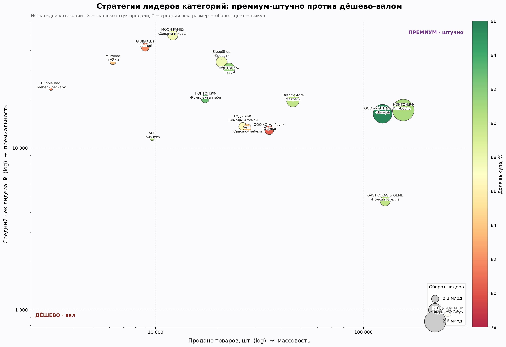
Премиум + объём (правый верх — сильнейшая позиция): УЮТНАЯ ЛОГИКА и НОНТОН в Шкафах — дорого и много одновременно. Дёшево-валом (правый низ): ВСЁ ДЛЯ МЕБЕЛИ (952 ₽ × 254 тыс. шт), GASTRORAG & GEMLUX (4 717 ₽ × 127 тыс. шт). Премиум-штучно (верх-лево): MOON FAMILY, FAURAPLUS.
Лидер дороже или дешевле рынка?
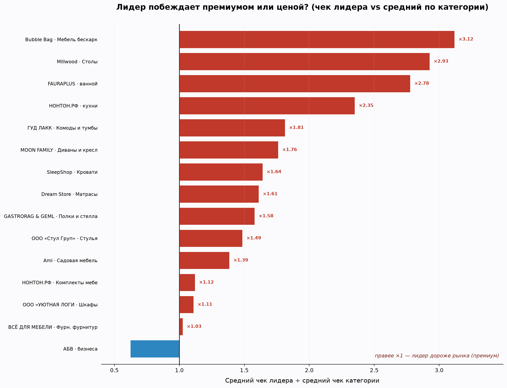
Почти все лидеры категорий продают дороже среднего по категории: Bubble Bag ×3,1, Millwood (Столы) ×2,9, FAURAPLUS ×2,8, НОНТОН (Кухня) ×2,4. Это значит, что лидерство на Ozon в мебели чаще строится на премиальном ассортименте, а не на демпинге. Единственное исключение среди лидеров — АБВ (мебель для бизнеса, ×0,62).
Доля выкупа — сигнал качества и логистики
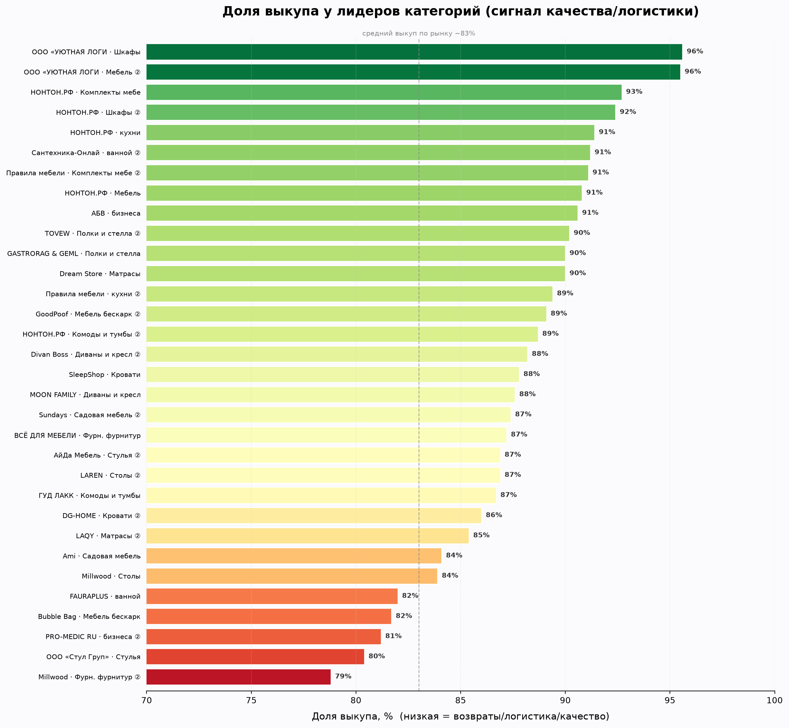
Лучшие по выкупу — ООО «УЮТНАЯ ЛОГИКА» (95,6%) и НОНТОН (92,4%): аккуратная логистика крупного игрока. Ниже рынка — Millwood (78,8%) и PRO-MEDIC RU (81,2%). Низкий выкуп = больше возвратов, что бьёт по юнит-экономике.
Таблица метрик лидеров
| Продавец | Категория | Поз. | Оборот | Товаров | Ср. чек | Выкуп |
|---|---|---|---|---|---|---|
| НОНТОН.РФ | Мебель | №1 | 2.67 млрд | 155 348 | 17 157 ₽ | 90.8% |
| ООО «УЮТНАЯ ЛОГИКА» | Мебель | №2 | 2.26 млрд | 145 047 | 15 580 ₽ | 95.5% |
| ООО «УЮТНАЯ ЛОГИКА» | Шкафы | №1 | 2.01 млрд | 123 488 | 16 268 ₽ | 95.6% |
| НОНТОН.РФ | Шкафы | №2 | 1.13 млрд | 55 481 | 20 457 ₽ | 92.4% |
| Dream Store | Матрасы | №1 | 897 млн | 45 744 | 19 605 ₽ | 90.0% |
| LAQY | Матрасы | №2 | 871 млн | 46 693 | 18 652 ₽ | 85.4% |
| SleepShop | Кровати | №1 | 706 млн | 20 777 | 33 991 ₽ | 87.8% |
| НОНТОН.РФ | Мебель для кухни | №1 | 699 млн | 22 574 | 30 971 ₽ | 91.4% |
| MOON FAMILY | Диваны и кресла | №1 | 604 млн | 12 095 | 49 907 ₽ | 87.6% |
| GASTRORAG & GEMLUX | Полки и стеллажи | №1 | 599 млн | 127 101 | 4 717 ₽ | 90.0% |
| Divan Boss | Диваны и кресла | №2 | 484 млн | 8 906 | 54 318 ₽ | 88.2% |
| ООО «Стул Груп» | Стулья | №1 | 454 млн | 35 193 | 12 896 ₽ | 80.4% |
| DG-HOME | Кровати | №2 | 451 млн | 9 879 | 45 637 ₽ | 86.0% |
| FAURAPLUS | Мебель для ванной | №1 | 374 млн | 8 912 | 42 011 ₽ | 82.0% |
| Ami | Садовая мебель | №1 | 366 млн | 27 545 | 13 293 ₽ | 84.1% |
| ГУД ЛАКК | Комоды и тумбы | №1 | 357 млн | 26 244 | 13 585 ₽ | 86.7% |
| НОНТОН.РФ | Комплекты мебели | №1 | 348 млн | 17 331 | 20 103 ₽ | 92.7% |
| Сантехника-Онлайн | Мебель для ванной | №2 | 327 млн | 23 335 | 14 003 ₽ | 91.2% |
| Правила мебели | Мебель для кухни | №2 | 323 млн | 34 185 | 9 461 ₽ | 89.4% |
| Sundays | Садовая мебель | №2 | 266 млн | 6 645 | 40 043 ₽ | 87.4% |
| ВСЁ ДЛЯ МЕБЕЛИ | Мебельная фурнитура | №1 | 242 млн | 254 579 | 952 ₽ | 87.2% |
| НОНТОН.РФ | Комоды и тумбы | №2 | 215 млн | 33 286 | 6 454 ₽ | 88.7% |
| Millwood | Столы | №1 | 213 млн | 6 233 | 34 202 ₽ | 83.9% |
| TOVEW | Полки и стеллажи | №2 | 200 млн | 30 118 | 6 642 ₽ | 90.2% |
| АйДа Мебель | Стулья | №2 | 193 млн | 12 373 | 15 597 ₽ | 86.9% |
| Правила мебели | Комплекты мебели | №2 | 186 млн | 8 237 | 22 597 ₽ | 91.1% |
| LAREN | Столы | №2 | 159 млн | 8 939 | 17 745 ₽ | 86.9% |
| АБВ | Мебель для бизнеса | №1 | 110 млн | 9 625 | 11 456 ₽ | 90.6% |
| Millwood | Мебельная фурнитура | №2 | 96 млн | 6 381 | 15 043 ₽ | 78.8% |
| Bubble Bag | Мебель бескаркасная | №1 | 73 млн | 3 134 | 23 257 ₽ | 81.7% |
| GoodPoof | Мебель бескаркасная | №2 | 64 млн | 7 904 | 8 159 ₽ | 89.1% |
| PRO-MEDIC RU | Мебель для бизнеса | №2 | 58 млн | 905 | 63 552 ₽ | 81.2% |
9. Приложение: полные данные
Все 219 подкатегорий с оборотом, динамикой, числом продавцов, концентрацией и лидерами. Клик по заголовку столбца — сортировка.
| Подкатегория | Категория | Оборот | Динамика | Продавцов | Топ-5 | Лидер №1 | Лидер №2 |
|---|---|---|---|---|---|---|---|
| Матрас | Матрасы | 10.64 млрд | 35.0% | 3 473 | 30.6% | Dream Store | LAQY |
| Шкаф распашной | Шкафы | 7.01 млрд | 28.0% | 643 | 53.4% | ООО «УЮТНАЯ ЛОГИКА» | НОНТОН.РФ |
| Диван раскладной | Диваны и кресла | 5.25 млрд | 22.0% | 1 483 | 32.1% | MOON FAMILY | Меббери |
| Двуспальная кровать | Кровати | 5.17 млрд | 29.0% | 654 | 30.8% | SleepShop | DG-HOME |
| Комплект стульев | Стулья, скамьи, табуреты, пуфики | 4.41 млрд | 34.0% | 2 193 | 20.0% | ООО «Стул Груп» | АйДа Мебель |
| Стол обеденный | Столы | 4.20 млрд | 20.0% | 1 398 | 14.4% | LAREN | ТЕКСТУРА |
| Стеллаж | Полки и стеллажи | 4.04 млрд | 21.0% | 3 558 | 24.7% | Официальный магазин GASTRORAG & GEMLUX | TOVEW |
| Тумба | Комоды и тумбы | 3.38 млрд | 17.0% | 4 635 | 16.6% | Мебельная Эстетика | ГУД ЛАКК |
| Комод | Комоды и тумбы | 3.24 млрд | 37.0% | 2 953 | 17.9% | ГУД ЛАКК | НОНТОН.РФ |
| Тумба для ванной | Мебель для ванной | 2.89 млрд | 31.0% | 1 099 | 40.0% | FAURAPLUS | Итана |
| Полка | Полки и стеллажи | 2.68 млрд | 4.0% | 23 181 | 7.0% | COBBE | LeviHouse |
| Стул | Стулья, скамьи, табуреты, пуфики | 2.34 млрд | 21.0% | 4 171 | 15.9% | Daiva Casa | Azzurro mebel |
| Набор садовой мебели | Садовая мебель | 2.29 млрд | 208.0% | 1 045 | 30.1% | Sundays | ASTELA |
| Кухонный гарнитур | Мебель для кухни | 2.11 млрд | 45.0% | 267 | 53.5% | НОНТОН.РФ | Правила мебели |
| Компьютерный стол | Столы | 2.08 млрд | -2.0% | 1 560 | 21.6% | Мебель-Цех | Теплмяг |
| Кровать детская | Кровати | 1.82 млрд | 22.0% | 800 | 26.2% | ОПТИПРОМ-А | Comfy-meb |
| Садовые качели | Садовая мебель | 1.80 млрд | 356.0% | 940 | 31.1% | ТОВМАН САД | DACHМЕБЕЛЬ (дилер OLSA) |
| Обувница | Комоды и тумбы | 1.73 млрд | 45.0% | 6 124 | 17.7% | Мебель Lina Loft | ООО «ЗМИ» |
| Кухонный модуль напольный | Мебель для кухни | 1.56 млрд | 12.0% | 293 | 36.7% | HOLBE | Netcall |
| Шкаф для ванной | Мебель для ванной | 1.50 млрд | 3.0% | 1 919 | 21.4% | Сантехника-Онлайн | FAURAPLUS |
| Письменный стол | Столы | 1.39 млрд | -7.0% | 1 276 | 21.8% | ГУД ЛАКК | МЕБЕЛЬНАЯ ФАБРИКА ЮДИНЫХ |
| Угловой диван | Диваны и кресла | 1.38 млрд | 18.0% | 182 | 48.7% | Divan Boss | Много Мебели |
| Односпальная кровать | Кровати | 1.33 млрд | 34.0% | 670 | 30.5% | SleepShop | MASSA |
| Журнальный стол | Столы | 1.21 млрд | 11.0% | 5 467 | 11.9% | Venerdi | IFERS |
| Столешница | Мебельная фурнитура и комплектующие | 1.18 млрд | 14.0% | 575 | 26.4% | Millwood | Pro100% Столешница |
| Шкаф-купе | Шкафы | 1.13 млрд | 15.0% | 202 | 47.1% | НОНТОН.РФ | Мебельная компания Е1 |
| Прямой диван | Диваны и кресла | 1.11 млрд | 6.0% | 1 025 | 17.4% | Селин | Монофикс |
| Кресло | Диваны и кресла | 1.09 млрд | 12.0% | 2 192 | 12.4% | КемпингГрупп | Реклайнер |
| Шезлонг | Садовая мебель | 1.03 млрд | 405.0% | 2 194 | 19.6% | Три муравья Основной | Ami |
| Пуф | Стулья, скамьи, табуреты, пуфики | 938 млн | 21.0% | 2 869 | 23.8% | Soda decor | Bam Decor |
| Ручка мебельная | Мебельная фурнитура и комплектующие | 905 млн | 11.0% | 5 962 | 22.1% | ||
| Комплект мебели для прихожей | Комплекты мебели | 890 млн | 9.0% | 346 | 53.3% | НОНТОН.РФ | Правила мебели |
| Садовый стол | Садовая мебель | 804 млн | 236.0% | 1 484 | 31.6% | ООО «Стул Груп» | Global Wave |
| Подстолье | Столы | 781 млн | 29.0% | 998 | 34.2% | Группа компаний «КРОН» | movedesk |
| Топпер-наматрасник | Матрасы | 756 млн | 4.0% | 438 | 40.7% | ORMATEK | Luna inc |
| Кухонный модуль навесной | Мебель для кухни | 732 млн | 1.0% | 412 | 41.9% | HOLBE | Правила мебели |
| Гардеробная система | Шкафы | 723 млн | 32.0% | 159 | 54.6% | Best Mebel | A'Belle |
| Раскладушка | Кровати | 706 млн | 69.0% | 1 486 | 26.4% | Энх | Lucky Goods |
| Туалетный столик | Столы | 675 млн | 3.0% | 1 026 | 21.3% | Mebelson | МебельКант |
| Кресло-кровать | Диваны и кресла | 633 млн | 32.0% | 797 | 37.0% | ГрафМаш НЗ | Logium |
| Скамья | Садовая мебель | 621 млн | 249.0% | 1 741 | 16.8% | FEROOM GROUP (Ферум груп) | Хоббика |
| Стенка для гостиной | Комплекты мебели | 559 млн | 10.0% | 212 | 58.7% | НОНТОН.РФ | Правила мебели |
| Садовое кресло | Садовая мебель | 558 млн | 277.0% | 1 034 | 34.0% | ООО «ЗПИ «Альтернатива» | Ami |
| Подвесное кресло | Диваны и кресла | 553 млн | 196.0% | 610 | 48.0% | Barberries | Сердце дома |
| Садовый диван | Садовая мебель | 553 млн | 236.0% | 175 | 47.8% | ВашДвор | ASTELA |
| Шкаф-витрина | Шкафы | 515 млн | 18.0% | 486 | 52.2% | ГУД ЛАКК | Dipriz (белорусская фабрика) |
| Кресло-качалка | Диваны и кресла | 512 млн | 5.0% | 1 356 | 48.2% | КемпингГрупп | Wood Space |
| Этажерка | Полки и стеллажи | 503 млн | 13.0% | 4 951 | 25.2% | Официальный магазин GASTRORAG & GEMLUX | Видовито - OOO «RNV» |
| Вешалка настенная | Шкафы | 488 млн | 9.0% | 2 571 | 24.0% | ООО «ЗМИ» | Home and Garden |
| Матрас для садовой мебели | Матрасы | 483 млн | 469.0% | 1 478 | 39.6% | Bio-Line | SGMedical shop |
| Ножка для мебели | Мебельная фурнитура и комплектующие | 444 млн | 8.0% | 3 066 | 21.3% | ||
| Бескаркасный диван | Мебель бескаркасная | 433 млн | 103.0% | 399 | 43.9% | Bubble Bag | SOFORIA |
| Комплект детской мебели | Комплекты мебели | 429 млн | -7.0% | 1 022 | 30.4% | КiТ | FunDesk |
| Табурет | Стулья, скамьи, табуреты, пуфики | 420 млн | 14.0% | 4 549 | 14.9% | ELITE-MARKET | CEDRO |
| Барный стул | Стулья, скамьи, табуреты, пуфики | 416 млн | 18.0% | 1 415 | 28.9% | Официальный магазин GASTRORAG & GEMLUX | DOBRIN |
| Направляющие | Мебельная фурнитура и комплектующие | 410 млн | -1.0% | 976 | 37.9% | ||
| Петля мебельная | Мебельная фурнитура и комплектующие | 401 млн | -3.0% | 3 329 | 36.1% | ||
| Двухъярусная кровать | Кровати | 397 млн | 28.0% | 140 | 32.4% | RayVol | Фабрика NEWKIDS |
| Мебель медицинская | Мебель для бизнеса | 392 млн | 12.0% | 89 | 50.9% | PRO-MEDIC RU | MET Store |
| Кухонный уголок | Диваны и кресла | 387 млн | 35.0% | 114 | 54.8% | BONMEBEL | Итана |
| Шкаф-пенал | Шкафы | 358 млн | 15.0% | 310 | 29.9% | CUBE | NOVATOR |
| Комплект табуретов | Стулья, скамьи, табуреты, пуфики | 344 млн | 30.0% | 476 | 35.9% | Master Pro | ИП ЧИРИКОВА Д С |
| Кресло-мешок | Мебель бескаркасная | 342 млн | 22.0% | 998 | 50.5% | GoodPoof | 1,5 Слона |
| Садовый тент | Садовая мебель | 315 млн | 592.0% | 1 119 | 35.9% | АГРО-ПРОФИ | TULSI |
| Детский стул | Стулья, скамьи, табуреты, пуфики | 309 млн | 1.0% | 3 420 | 23.2% | «ДВИЖЕНИЕ - ЖИЗНЬ» | Растущий Друг Кузя |
| Шатёр | Садовая мебель | 275 млн | 752.0% | 363 | 62.7% | Ami | Fung Yard |
| Банкетка | Стулья, скамьи, табуреты, пуфики | 271 млн | 5.0% | 1 103 | 35.0% | Mebel Made | Steel.mebel24 |
| Садовый стул | Садовая мебель | 255 млн | 230.0% | 3 351 | 27.3% | Global Wave | ЮнитиШоп |
| Стол производственный | Мебель для бизнеса | 252 млн | 49.0% | 334 | 59.0% | АБВ | Ставилон ПРО |
| Держатель для полки | Мебельная фурнитура и комплектующие | 234 млн | 12.0% | 2 539 | 17.8% | ВСЁ ДЛЯ МЕБЕЛИ | AGM |
| Гамак | Садовая мебель | 215 млн | 477.0% | 3 172 | 49.9% | Гамак и Спальник | Официальный магазин |
| Комплект барных стульев | Стулья, скамьи, табуреты, пуфики | 214 млн | 38.0% | 332 | 59.2% | DOBRIN | ООО «Стул Груп» |
| Модульный диван | Диваны и кресла | 213 млн | 12.0% | 273 | 63.0% | KRASDIVAN | FORREST |
| Складной стул | Стулья, скамьи, табуреты, пуфики | 211 млн | 33.0% | 1 269 | 38.1% | Самсон | Компания-производитель Etcona |
| Приставной столик | Столы | 209 млн | 18.0% | 2 078 | 24.2% | DEEPLIFE | librox |
| Шкаф книжный | Шкафы | 205 млн | 22.0% | 206 | 52.3% | Best Mebel | СИВЕР |
| Беседка | Садовая мебель | 202 млн | 261.0% | 279 | 34.9% | Fung Yard | ТехноГрани |
| Мебельное колесо | Мебельная фурнитура и комплектующие | 194 млн | 5.0% | 2 713 | 35.1% | ||
| Тахта | Кровати | 180 млн | 31.0% | 96 | 57.8% | Правила мебели | Ami |
| Стеллаж для ванной | Полки и стеллажи | 177 млн | 3.0% | 745 | 29.5% | TOVEW | HOMM |
| Заглушка декоративная | Мебельная фурнитура и комплектующие | 176 млн | 59.0% | 1 707 | 34.1% | МАСТЕРиКО | 3Д БЛОК |
| Запчасти для гардеробной системы | Мебельная фурнитура и комплектующие | 172 млн | -5.0% | 1 061 | 38.5% | РегионМебель (63mebel) | Титан-ГС |
| Столик для ноутбука | Столы | 166 млн | -14.0% | 1 093 | 29.5% | ЭТХУ | BD-Стол |
| Садовый сундук | Стулья, скамьи, табуреты, пуфики | 165 млн | 465.0% | 151 | 75.1% | Кетершоп | GARDECK |
| Консоль | Столы | 160 млн | 3.0% | 988 | 22.5% | Akur Design Studio | ЛИДЕР |
| Протектор для мебели | Мебельная фурнитура и комплектующие | 158 млн | -4.0% | 3 283 | 38.2% | ||
| Стол-книжка | Столы | 158 млн | -23.0% | 885 | 37.0% | ANSO | Shi.Mall |
| Буфет | Шкафы | 148 млн | 26.0% | 518 | 62.6% | Эльдизайн | Нарус |
| Обеденная группа | Комплекты мебели | 146 млн | 12.0% | 104 | 87.4% | Мебельная Фабрика «ТРИ БОБРА» | Beemebel.ru |
| Табурет-стремянка | Стулья, скамьи, табуреты, пуфики | 145 млн | 9.0% | 1 783 | 38.3% | «ДВИЖЕНИЕ - ЖИЗНЬ» | Roku |
| Кресло педикюрное | Мебель для бизнеса | 144 млн | 39.0% | 77 | 68.7% | ||
| Шкаф складной | Шкафы | 143 млн | 26.0% | 950 | 50.9% | ООО «Дельта Дом» | TDhome |
| Чехол для бескаркасной мебели | Мебель бескаркасная | 142 млн | 265.0% | 1 187 | 43.0% | EVERENA | FLER |
| Колыбель | Кровати | 139 млн | 48.0% | 368 | 60.8% | Pituso | Lionelo Russia |
| Комплект мебели для спальни | Комплекты мебели | 134 млн | 52.0% | 96 | 53.8% | OOO «Мебельбай» | ВМ-мебель.РФ |
| Газлифт мебельный | Мебельная фурнитура и комплектующие | 133 млн | -4.0% | 709 | 42.6% | ВСЁ ДЛЯ МЕБЕЛИ | GAME CHAIRS |
| Каркас кровати | Кровати | 126 млн | 27.0% | 74 | 68.0% | Стальпром | Scandi.plus |
| Кушетка косметологическая | Мебель для бизнеса | 125 млн | -8.0% | 79 | 48.9% | ||
| Плинтус для столешницы | Мебельная фурнитура и комплектующие | 118 млн | -6.0% | 520 | 46.9% | ||
| Мебельный фасад | Мебельная фурнитура и комплектующие | 110 млн | -1.0% | 258 | 29.0% | Кьюмен | CAMPANA HOME |
| Садовая кухня | Садовая мебель | 109 млн | 307.0% | 296 | 61.9% | KJOPMANN | Фестиваль Вкуса |
| Мойка производственная | Мебель для бизнеса | 108 млн | 37.0% | 184 | 70.1% | ||
| Комплект мебели для ПВЗ | Мебель для бизнеса | 108 млн | 30.0% | 52 | 63.9% | Твой ПВЗ | Мебель для ПВЗ |
| Дверь для шкафа | Мебельная фурнитура и комплектующие | 108 млн | 37.0% | 31 | 91.5% | Титан-ГС - двери на заказ | АП-ПОРТЕ |
| Набор мебельной фурнитуры | Мебельная фурнитура и комплектующие | 102 млн | 123.0% | 3 266 | 22.5% | Росмагнит | WiseBuys |
| Кровать-чердак | Кровати | 101 млн | 15.0% | 71 | 38.2% | ООО «Фабрика Новита» | МебельДилер |
| Каркас для садовой мебели | Садовая мебель | 96 млн | 263.0% | 426 | 36.5% | ЛЕНТА | AstoCrystall |
| Шкаф-кровать | Кровати | 87 млн | 57.0% | 12 | 85.1% | STYLINT | Room Saver |
| Шкаф навесной | Шкафы | 85 млн | -15.0% | 218 | 45.1% | ВСК-мебель | MANNYT |
| Пеленальный стол | Комоды и тумбы | 83 млн | 19.0% | 465 | 56.7% | ALEXCARE | СТУЛЛИ |
| Ящик выдвижной мебельный | Мебельная фурнитура и комплектующие | 83 млн | 38.0% | 301 | 58.5% | ТБМ | Ergostol |
| Набор для перемещения мебели | Мебельная фурнитура и комплектующие | 81 млн | -2.0% | 928 | 53.3% | ||
| Аксессуары для качели | Садовая мебель | 80 млн | 692.0% | 689 | 58.0% | JEONIX | FLER |
| Ламель для кровати | Мебельная фурнитура и комплектующие | 76 млн | -16.0% | 131 | 78.6% | ||
| Планка для столешницы | Мебельная фурнитура и комплектующие | 76 млн | 13.0% | 251 | 45.2% | ||
| Барный стол | Столы | 74 млн | 40.0% | 218 | 49.7% | ООО «Стул Груп» | KROMLAND |
| Антресоль мебельная | Шкафы | 74 млн | 3.0% | 136 | 60.5% | Best Mebel | LAERA |
| Шкаф производственный | Мебель для бизнеса | 72 млн | 21.0% | 38 | 70.5% | ООО Вариант 999 | Петров Андрей Светославович |
| Подставка под ноги | Стулья, скамьи, табуреты, пуфики | 67 млн | -9.0% | 2 015 | 26.6% | ABCD STORE | ForErgo Официальный магазин |
| Этажерка для обуви | Комоды и тумбы | 66 млн | 26.0% | 1 679 | 42.3% | Сима-Ленд | Ozon |
| Выкатная корзина | Мебельная фурнитура и комплектующие | 65 млн | 0.0% | 385 | 65.5% | ТБМ | ВСЁ ДЛЯ МЕБЕЛИ |
| Парта | Столы | 62 млн | 42.0% | 138 | 59.5% | FunDesk | ONLEAP |
| Подъёмный механизм | Мебельная фурнитура и комплектующие | 58 млн | 15.0% | 428 | 27.6% | ||
| Кушетка | Диваны и кресла | 57 млн | 27.0% | 333 | 45.1% | Фабрика Divan24 | Удобные Диваны |
| Штанга в шкаф | Мебельная фурнитура и комплектующие | 54 млн | 28.0% | 374 | 52.4% | Альтера | Инталика |
| Наполнение для кухонного модуля | Мебель для кухни | 54 млн | -15.0% | 759 | 37.1% | Хорошая мебель | Красивый дом |
| Кровать раздвижная | Кровати | 49 млн | 60.0% | 205 | 81.1% | ГУД ЛАКК | Сканд Мебель |
| Фурнитура для шкафа-купе | Мебельная фурнитура и комплектующие | 49 млн | 1.0% | 425 | 65.9% | ||
| Запчасти для кровати | Мебельная фурнитура и комплектующие | 46 млн | -19.0% | 440 | 34.3% | WoodМаркет | Wood Terra Premium |
| Запчасти для стула | Стулья, скамьи, табуреты, пуфики | 46 млн | 19.0% | 1 175 | 29.9% | Top Find | Детитекс |
| Комплект мягкой мебели | Комплекты мебели | 46 млн | 35.0% | 32 | 70.1% | SKANDILINE | Фабрика Фантазер |
| Запчасти для стеллажа | Полки и стеллажи | 45 млн | 38.0% | 175 | 67.3% | GetMet | Сейф 2000 |
| Фурнитура для садовой мебели | Садовая мебель | 44 млн | 684.0% | 208 | 62.1% | Метхоум | Fidan |
| Стойка ресепшн | Столы | 44 млн | 11.0% | 52 | 84.0% | MBL Мебель для бизнеса | Пермторгкомплект |
| Крестовина для компьютерного кресла | Мебельная фурнитура и комплектующие | 43 млн | 6.0% | 315 | 74.3% | ||
| Детский стол | Столы | 42 млн | 10.0% | 324 | 43.7% | BABYROX | Малая медведица — фабрика мебели |
| Цоколь для кухни | Мебельная фурнитура и комплектующие | 42 млн | 7.0% | 92 | 89.1% | ||
| Комплект мебели для ванной | Мебель для ванной | 40 млн | 66.0% | 53 | 68.8% | Сантехника-Онлайн | АКВА |
| Швейный уголок | Мебель для бизнеса | 39 млн | 6.0% | 30 | 81.3% | УЮТНО и ТОЧКА | Мебель для рукоделия Комфорт |
| Стол-стеллаж | Столы | 38 млн | 59.0% | 65 | 61.4% | Design Dom | SolidWood |
| Комод пеленальный | Комоды и тумбы | 36 млн | -89.0% | 38 | 69.9% | ||
| Толкатель мебельный | Мебельная фурнитура и комплектующие | 36 млн | -3.0% | 503 | 42.3% | ||
| Уголок мебельный | Мебельная фурнитура и комплектующие | 35 млн | -4.0% | 644 | 27.3% | ||
| Механизм качания | Мебельная фурнитура и комплектующие | 34 млн | -3.0% | 365 | 57.7% | ||
| Сервировочный стол | Столы | 33 млн | 11.0% | 399 | 38.7% | Dominanta | НТ-проект |
| Кромка мебельная клеевая | Мебельная фурнитура и комплектующие | 31 млн | -5.0% | 597 | 50.7% | ||
| Подвесной стол | Столы | 30 млн | 97.0% | 192 | 48.8% | Дом Мебели | Millwood |
| Подставка под системный блок | Столы | 30 млн | -18.0% | 495 | 40.1% | DoNext | MultiCon |
| Шкаф для газового баллона | Садовая мебель | 28 млн | 243.0% | 51 | 77.8% | АКБИТ Плюс | Магазин «наДАЧу78» |
| Полка производственная | Мебель для бизнеса | 28 млн | 35.0% | 69 | 77.7% | АБВ | UrbanFrame |
| Стяжка мебельная | Мебельная фурнитура и комплектующие | 27 млн | -1.0% | 439 | 43.2% | ||
| Бескаркасный пуф | Мебель бескаркасная | 27 млн | 14.0% | 394 | 59.3% | Laavi Home | COOLBAG |
| Садовый шкаф | Садовая мебель | 27 млн | 441.0% | 148 | 76.6% | GARDECK | Гарден Арт |
| Сундук | Стулья, скамьи, табуреты, пуфики | 26 млн | 66.0% | 122 | 56.7% | Твердыня | Торвис |
| Наполнитель для кресла-мешка | Мебельная фурнитура и комплектующие | 24 млн | 2.0% | 326 | 56.0% | ||
| Кресло детское | Стулья, скамьи, табуреты, пуфики | 23 млн | -23.0% | 1 007 | 33.5% | XedaR | Кипрей |
| Механизм поворотный мебельный | Мебельная фурнитура и комплектующие | 19 млн | 0.0% | 426 | 50.1% | ||
| Фурнитура для мягкой мебели | Мебельная фурнитура и комплектующие | 17 млн | -3.0% | 396 | 55.6% | ||
| Медицинский матрас | Матрасы | 17 млн | 47.0% | 10 | 94.3% | SGMedical shop | MEDISO |
| Пантограф для шкафа | Мебельная фурнитура и комплектующие | 17 млн | 16.0% | 131 | 70.9% | ||
| Модуль стенки для гостиной | Комплекты мебели | 17 млн | 45.0% | 35 | 78.2% | Alba Мебель | DeKomoд |
| Кромка мебельная безклеевая | Мебельная фурнитура и комплектующие | 16 млн | -6.0% | 143 | 64.7% | ШТОРМ | A-Сервис |
| Офисный стол | Столы | 15 млн | 3.0% | 88 | 74.5% | Re-seption | MBL Мебель для бизнеса |
| Стойка ресепшн для ПВЗ | Мебель для бизнеса | 15 млн | 8.0% | 18 | 85.5% | Бизнес мебель | ИП Русских А.В. |
| Пружинный блок | Мебельная фурнитура и комплектующие | 15 млн | -33.0% | 85 | 89.0% | ||
| Шкант мебельный | Мебельная фурнитура и комплектующие | 14 млн | 3.0% | 387 | 46.8% | ||
| Аксессуары для гамака | Садовая мебель | 14 млн | 343.0% | 548 | 49.5% | Millwood | ROSLOVE |
| Латодержатель | Мебельная фурнитура и комплектующие | 13 млн | -11.0% | 121 | 57.2% | ||
| Барная стойка | Шкафы | 13 млн | 92.0% | 15 | 97.4% | БЕЛОРУССКИЙ ДОМ | Мебель для Магазинов |
| Трибуна для выступлений | Столы | 12 млн | 49.0% | 57 | 92.9% | Торговая, офисная и домашняя мебель | Madlen Co |
| Демпфер мебельный | Мебельная фурнитура и комплектующие | 11 млн | -31.0% | 427 | 35.8% | ||
| Эксцентриковая стяжка | Мебельная фурнитура и комплектующие | 11 млн | -1.0% | 182 | 68.8% | ||
| Ремкомплект для садовой мебели | Садовая мебель | 11 млн | 946.0% | 168 | 83.9% | Осилис | YPSPORT |
| Запчасти для дивана | Диваны и кресла | 10 млн | -1.0% | 159 | 66.0% | ||
| Реечное дно | Кровати | 10 млн | 3.0% | 28 | 79.5% | ||
| Подлокотник для стола | Столы | 10 млн | 1.0% | 386 | 48.2% | ЭТХУ | Русский Дом |
| Подставка производственная | Мебель для бизнеса | 9 млн | 86.0% | 136 | 45.3% | ||
| Примерочная кабина | Мебель для бизнеса | 9 млн | -7.0% | 49 | 52.8% | Коллекция Мебели | ИП Тимофеева О. В. |
| Термоизоляционная планка | Мебельная фурнитура и комплектующие | 9 млн | 2.0% | 60 | 72.1% | ||
| Механизм трансформации | Мебельная фурнитура и комплектующие | 9 млн | 29.0% | 118 | 69.5% | ||
| Стул для музыканта | Стулья, скамьи, табуреты, пуфики | 8 млн | 1.0% | 248 | 47.1% | БИГТВ77 | Музторг |
| Купол | Садовая мебель | 8 млн | 5672.0% | 82 | 97.3% | Фабрика беседок | Чудопоставки |
| Изголовье кровати | Мебельная фурнитура и комплектующие | 8 млн | -27.0% | 56 | 54.8% | Крепкая-Кровать | Домавито |
| Доводчик мебельный | Мебельная фурнитура и комплектующие | 8 млн | -17.0% | 186 | 72.6% | Комплект Profi | GAME CHAIRS |
| Аксессуары для медицинской мебели | Мебель для бизнеса | 7 млн | 46.0% | 102 | 63.2% | ||
| Кронштейн откидного стола | Столы | 7 млн | 43.0% | 286 | 81.7% | ||
| Полка для клавиатуры | Мебельная фурнитура и комплектующие | 7 млн | -4.0% | 280 | 64.1% | ||
| Аксессуары для беседки | Садовая мебель | 7 млн | 214.0% | 164 | 67.8% | STEELFORGE | Armis |
| Держатель для штанги | Мебельная фурнитура и комплектующие | 7 млн | 11.0% | 267 | 43.2% | ||
| Стул откидной | Стулья, скамьи, табуреты, пуфики | 7 млн | -11.0% | 206 | 66.0% | Glider | АзбукаДекор |
| Подпятник | Мебельная фурнитура и комплектующие | 6 млн | 1.0% | 870 | 33.5% | ||
| Маятник для кроватки | Кровати | 6 млн | 18.0% | 37 | 66.5% | ||
| Щёточный уплотнитель | Мебельная фурнитура и комплектующие | 6 млн | 0.0% | 204 | 68.4% | ||
| Корпус шкафа | Шкафы | 5 млн | 323.0% | 22 | 91.8% | WOOD&STEEL | LAERA |
| Трёхъярусная кровать | Кровати | 4 млн | 5.0% | 11 | 87.2% | ||
| Декор для мебели | Мебельная фурнитура и комплектующие | 4 млн | 20.0% | 125 | 59.8% | ||
| Фурнитура для мебельной трубы | Мебельная фурнитура и комплектующие | 4 млн | 33.0% | 175 | 67.1% | ||
| Комплект офисной мебели | Комплекты мебели | 4 млн | -41.0% | 32 | 81.0% | Правила мебели | компания «Мебель 24» |
| Барный шкаф | Шкафы | 3 млн | -36.0% | 93 | 39.9% | ||
| Фиксатор фасада мебельный | Мебельная фурнитура и комплектующие | 3 млн | 4.0% | 260 | 62.9% | ||
| Крючок мебельный | Мебельная фурнитура и комплектующие | 3 млн | -89.0% | 605 | 21.6% | ||
| Пружина мебельная | Мебельная фурнитура и комплектующие | 3 млн | 37.0% | 174 | 60.6% | ||
| Готовый навес для крыльца | Садовая мебель | 3 млн | -31.0% | 158 | 64.1% | ||
| Запчасти для кресла | Диваны и кресла | 3 млн | 23.0% | 50 | 85.9% | ||
| Профиль для стекла | Мебельная фурнитура и комплектующие | 2 млн | -7.0% | 31 | 82.1% | ||
| Уплотнитель для цоколя | Мебельная фурнитура и комплектующие | 2 млн | -6.0% | 179 | 88.6% | ||
| Запчасти для барной стойки | Мебельная фурнитура и комплектующие | 2 млн | 32.0% | 97 | 67.1% | ||
| Ограничитель угла открывания | Мебельная фурнитура и комплектующие | 2 млн | -10.0% | 104 | 68.7% | ||
| Защитный экран для офиса | Мебель для бизнеса | 1 млн | 35.0% | 66 | 74.7% | ||
| Стопор колёс мебельный | Мебельная фурнитура и комплектующие | 1 млн | -11.0% | 208 | 75.5% | ||
| Шляпка для саморезов | Мебельная фурнитура и комплектующие | 1 млн | -12.0% | 201 | 79.8% | ||
| Стенка для садовой постройки | Садовая мебель | 1 млн | 981.0% | 39 | 94.1% | ||
| Цепь для садовых качелей | Мебельная фурнитура и комплектующие | 1 млн | 927.0% | 69 | 82.8% | ||
| Ларь для овощей | Мебель для бизнеса | 660 676 | 1554.0% | 115 | 63.5% | ||
| Садовая тумба | Садовая мебель | 594 820 | -55.0% | 26 | 70.8% | ||
| Ограждение для кровати | Мебельная фурнитура и комплектующие | 394 731 | -71.0% | 18 | 91.0% | ||
| Шток для эксцентриковой стяжки | Мебельная фурнитура и комплектующие | 390 076 | -47.0% | 86 | 70.8% | ||
| Слэб деревянный | Мебельная фурнитура и комплектующие | 31 427 | % | 7 | 79.7% | ||
| Сундук-тумба для ПВЗ | Мебель для бизнеса | 12 039 | -13.0% | 3 | 100.0% |